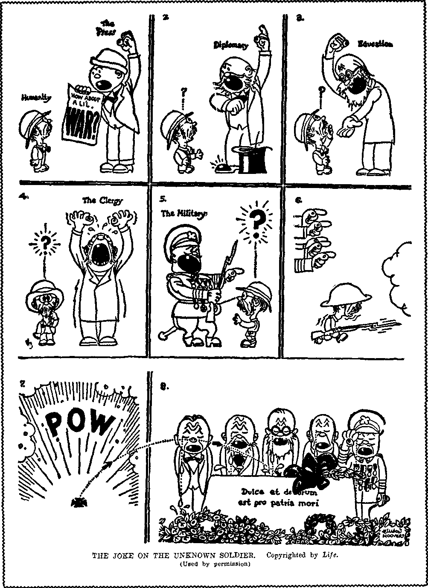

A JOURNAL OF FACT HOPE AND COURAGE
iiiiiiiiiiiiiiiiiiimiiiiiiiiiiiiiiiiiiimiiiiiiiiimiiiiiiiiiiiimiiiiiiiii
in this issue
FLEE NOW
Full text of lecture by Judge Rutherford broadcast over chain May 6, 1934
ON THE GOLD BILL
LIBERTY OR REGIMENTATION?
"WHY BURN YOUR HOUSE?” "ANTI-NAZI” BILL NOTES ON NEWS
iiiiiiiiiiiiiiiiiiimiiiiiiiiiiiiiiiiiiiiiiiiiiiiiiimiiiiiiiiimmiiiiiiiii
every other WEDNES DAY five cents a copy one dollar a year Canada & Foreign 1.25
Vol. XV - No. 383 May 23, 1934
CONTENTS
■ in । ■ .........
LABOR AND ECONOMICS
Taxes and High Cost of Living . 531
Senator Huey Long’s Program . 531
Floating Town of Ten Thousand . 534
SOCIAL AND EDUCATIONAL
Short-Wave Reception in Trinidad 524
Do It Now!........527
“Why Burn Your House
to Rid It of Rats?” .... 523 “Anti-Nazi” Bill Ridiculous
Anomaly and Anachronism . 530
Comforts of Welfare Island . . 532
Astor Offers Tenements to City . 531
Doing Away with Slums . . . 534 Some of the Old-Timers .... 534 Demand for Freedom of Air . . 534
FINANCE—COMMERCE—TRANSPORTATION
McFadden’s Speech on Gold Bill 525
Cost of World War to America . 527
Air Pilots and Air Profits . . . 531
The Other $54,000,000,000 ... 533
President of the A. T. & T. . . , 533
Profits of Milk Trust .... 533
POLITICAL—DOMESTIC ?.ND FOREIGN
The Change from Liberty to Regimentation
Joke on Unknown Soldier (Cartoon)
No Intention of Disarming . . . 532
AGRICULTURE AND HUSBANDRY
Studies in Soil Erosion .... 535
The Brazilian Coffee Crop . . . 535
HOME AND HEALTH
Health Food Fit for a King . . 536
Largest Insane Asylum .... 536
Whole-Wheat Nut Bread . . . 536
TRAVEL AND MISCELLANY
Floods in The Argentine . . . 537
Canada’s Huge Interest Burden . 537
Motor Road Across Canada . . 537
Dynamite Explosion in Salvador . 537
The Rodney and the Nelson . . 537
Editor of ITcstcrii Watchman Dies 540
RELIGION AND PHILOSOPHY
Flee Now........ 515
Mercy—for a Consideration . . 539
The Liverpool Cathedral . . . 539
Holy Records at $3.50 Each . . 540
Sacred Heart of Jesus, Limited . 510
Sunday Tennis—Church’s Blessing 541
What Morrison Hopes .... 542
Spirit Medium’s Suicide Note . . 542 “Ye Worship Ye Know Not What” 542
The Maryland Act of Intolerance 542
Lost in the ‘Church’ .... 513
--.gYo-
I’ublished exery oilier Wednesday by GOLDEN AGE PUBLISHING COMPANY, INC. 11“ Adams Street, Brooklyn, N. Y., U. S. A.
Clayton J. Woodworth 7'reMdtat Nathan II. Knorr Vice President
Charles E. Wagner Secretary and Treasuier
FIXE CENTS A COPY
$1 a year, United States; .>1.25 to Canada and all other countries.
Notice To Si bsckibers remittances: For your own saiety, remit by postal or express money order. When coin or currency is lost in tne onhnarx niaiD. tiicu' i^ no redress. Remittances iroin countries other than those named below may be made to the Brooklyn office, but only by international postal mcnej ox^er.
receipt of a new or renewal sub'Crintion will bo acknowledged only xxhen requested. notice of expiration is sent with th*' journal one month before subscription expires. 1’lease renew promptly to avoid loss of copie.*.
change of address : Subscribers will please notify this office of change of address at least two weeks in advance.
1'LBLisiiED also in Danish, Dutch. Esperanto. Finnish, French. German, Greek, Japanese, Norwegian, Polish, Slovak, Spanish, Swedish.
Offices fop. Other Countries
British ... ..... 34 Craven Terrace, London, W. 2, England Canadian.......40 Trxvln Avenue, Toronto 5. Ontario, Canada
Australasian .... 7 Beresford Road, Strathfield, N. S. W.. Australia South African.......Boston House, Cape Town, South Africa
Entered as second-class matter at Brooklyn, N. Y., under the Act of March 3, 1879.
Volume XV Brooklyn, N. Y., Wednesday, May 23, 1934 Number 383
Flee Now
Broadcast over chain from WBBK May 6, 1934, by Judge Rutherford
THE information contained in this speech is given for the benefit of all persons of good will, regardless of creed, denomination, race or color. The world is in a most critical state, and all information obtainable from the Scriptures, concerning the same, should be diligently sought by those who hope to see peace and righteousness prevail. The enemy, being unable to meet truth with truth, resorts to means of preventing the truth from being made known. There is no desire on the part of Jehovah’s witnesses to do injury to any creature on earth, but there is every desire to be obedient to God’s will and do good to mankind by telling them the truth.
Jehovah God is entirely unselfish, and for that reason it is written in the Scriptures: “God is love.” He does not have any pleasure in the wicked. The wicked are an abomination unto Jehovah, and for the good of all creation He will in due time, destroy all the wicked. His time to destroy the wicked is near. (Revelation 11: 15-18; Psalm 145:20) He does not take advantage of the wicked, but gives such fair notice and warning before destroying them. God has permitted Satan to go on for centuries unhindered in his wickedness; but now the end is come, for ‘this is the day of vengeance of Jehovah’ against all wickedness. In these last days Jehovah has caused full notice and warning to be given to the workers of lawlessness, and such notice and warning the powers that control the world have spurned, and .the day of their destruction draws nigh. Before the greatest tribulation of all time falls upon the world Jehovah causes notice and warning to be given also to the common people, to the end that all who will may flee to the only place of safety.
The greatest teacher given to man is Jesus Christ. Clothed with all power and authority in heaven and earth, and into whose hand is committed all righteous judgment and the execution thereof, Jesus Christ speaks with absolute authority. When the world receives information from an ordinary man upon a question of importance heed is given thereto. With stronger reasoning should all men give strict attention to the words of authority spoken by the great and righteous Ruler of the world. More than nineteen centuries ago, and just before He left earth, Jesus spoke a message of warning to the people of good will who should be on earth at the end of the world, and that message particularly applies to the peoples now on earth, because it is the time of its fulfilment. We are enabled to understand prophecy only after its fulfilment has begun; and, now having clearly before our eyes the physical facts showing a fulfilment of the prophecy of warning uttered by Jesus, it is high time that we give heed to such warning.
That great prophecy uttered by Christ, and recorded in the twenty-fourth chapter of Matthew, fixes the specific time when the warning must be made known to the common people and the time when they must flee if they would find a place of refuge. Jehovah’s witnesses are now given the command to ‘preach this gospel of the Kingdom to the world for a witness; and then the final end is certain to come’. (Matthew 24: 14) For some time in obedience to this prophetic commandment there has been given in the world a wide proclamation of this good news, the people being told that the kingdom of heaven is here and that it is the only hope of the world. To those who have looked for the rule of righteousness on the earth Jesus further says: “When ye, therefore, shall see the abomination of desolation, spoken of by Daniel the prophet, stand in the holy place, (whoso read-eth, let him understand:) then let them which be in Judaea flee into the mountains.”—Matthew 24:15,16.
This message is addressed to those who are “in Judaja”, and they are the ones who are directed to flee. The message of warning must be delivered by those who are ‘of Judaea’ because such are the ones commissioned to speak as the witnesses of the Lord. A “Judean” is one who is devoted to the praise and service of Jehovah God and who is diligent in giving obedience to God’s commandments. (Hebrews 13:15) These Judeans are designated as the witnesses of Jehovah, to whom is committed the testimony of Jesus Christ, and who in obedience to‘ His commandments must deliver that testimony to those of the world who will hear. (Revelation 12:17; Isaiah 43:12) They are commissioned by the Lord to declare that this is the day of the vengeance of Jehovah. (Isaiah 61:1,2) They are commanded as the witnesses of Jehovah to speak this message of warning in the hearing of and for the benefit of the “prisoners” and those people of good will now on earth called “Jonadabs”. These two classes last named are the ones who are “in Judsea”, that is to say, who are in heart sympathy with righteousness and who desire to see God’s will done on earth. This message of warning is delivered to them in due time according to the Lord’s commandment in order to afford them an opportunity to flee to the place of refuge and find protection during the time of great tribulation that is impending and about to fall. The clear distinction between those who are in Judea and those who are of Judea enables us to have a better understanding of the prophecy uttered by Jesus and which is now in course of fulfilment. To be sure, no good could result from the abuse of men, and there is no desire on the part of Jehovah’s witnesses to hold up men to ridicule. The truth of God’s Word, however, must be declared, and it is God’s truth that gives hurt to those who are opposed to it. Let us determine from the Word of God, then, who are these “prisoners” and who are “Jonadabs”, in order that we may appreciate the application of this great prophecy uttered by Jesus Christ.
PRISONERS
There is a great multitude of persons on earth who have made a consecration to do the will of God, and hence have agreed to follow in the footsteps of Jesus Christ, but who because of fear of man or selfishness have not faithfully fulfilled their agreement with the Lord. Such are held in restraint or in prison by those who are against God and His kingdom. Satan is the great enemy of God, and he makes every possible effort to keep persons away from Jehovah. Satan the Devil is the great deceiver of man, and one of his chief means of deception is that of religion. He has used religion from the time of Nimrod till now to deceive the people. The present-day organized church systems are called “organized Christianity” or “Christendom”. They pretend to serve God and Christ, but instead they serve the Devil, who has overreached them and caused them to become a part of the world organization. In the church organizations are many persons who have a desire to serve God. They see that the church leaders in particular are guilty of many wrongful deeds and that they are entirely out of harmony with God and His kingdom and that the church organization has become a selfish, political thing, and that in the organization the ultrarich and the professional politicians are the chief ones. Seeing the many unrighteous things practiced in these religious organizations, and that the clergy do not teach the truth of the Bible, those in the churches who love God sigh and cry because of the many abominations there practiced. Why do not those sincere persons leave the church systems? The answer is that the clergy have made those sincere persons believe that it is their duty to remain in the church organizations in order to uplift the world. The leaders have frightened the sincere ones into believing that if they leave the church organizations it will be disastrous for them. Therefore the timid ones stay in the churches because of fear induced by what the clergy tell them. They are virtually prisoners, and the Scriptures designate them as “prisoners”.
Who causes these prisoners to fear to leave the church organizations? The Scriptures answer: “Their fear ... is taught by the precept of men.” (Isaiah 29:13) By His prophet Jehovah foretold this unhappy condition of the conscientious church members who are held as prisoners in the prison houses but who long to be free to serve God. The Scriptures tell of them as sighing and crying unto God because of these abominations, and praying this prayer: “Help us, 0 God of our salvation, for the glory of thy name; and deliver us, and purge away our sins, for thy name’s sake. Wherefore should the [nations] say, Where is their God? let him be known among the [nations] in our sight, by the revenging of the blood of thy servants which is shed. Let the sighing of the prisoner come before thee; according to the greatness of thy power preserve thou those that are appointed to die.”—Ps. 79:9-11.
When the humble and timid ones in the church organizations obtain a book explaining the truth of the Bible and the clergyman learns this fact, he urges that the book be destroyed, and thus he takes away much comfort from the hungry soul in the church “prison house”. "When the clergymen learn that those in the prison house are hearing the message of truth by radio, they set about to prevent the use of the radio by those who proclaim the message of the truth. Such clergymen not only are prison keepers, but are persecutors of the members of their congregation who seek to learn the truth and who attempt to tell others about it. Jehovah by His prophet identifies these prisoners, and shows that the sincere prisoner prays this prayer, to wit: “Attend unto my cry; for I am brought very low: deliver me from my persecutors; for they are stronger than I. Bring my soul out of prison, that I may praise thy name: the righteous shall compass me about; for thou shalt deal bountifully with me.” (Psalm 142: 6, 7) When will the Lord hear these prayers and answer them? The prophecy in Psalm 102 answers: “When the Lord shall build up Zion, he shall appear in his glory. He will regard the prayer of the destitute, and not despise their prayer. This shall be written for the generation to come; and the people which shall be created shall praise the Lord. For he hath looked down from the height of his sanctuary; from heaven did the Lord behold the earth; to hear the groaning of the prisoner, to loose those that are appointed to death.”—Psalm 102:16-20.
Zion, which is God’s organization, is now builded up. Christ Jesus the Head thereof is at God’s temple and is sending forth faithful witnesses to give testimony to the prisoners, that they may hear and learn the way of escape; and God’s anointed ones are commissioned by Him “to open the blind eyes, to bring out the prisoners from the prison, and them that sit in darkness out of the prison house”. (Isaiah 42:7) The kingdom of God and His Christ is here, and these prisoners must hear the message of the Kingdom, and those who do hear and obey God He sets free; as it is written: “The Lord looseth the prisoners: the Lord openeth the eyes of the blind: the Lord raiseth them that are bowed down: the Lord loveth the righteous.”—Psalm 146:7,8.
For this reason Jehovah’s witnesses, in obedience to God’s commandment, now go throughout the land and to all those who love righteousness, and, regardless of creed or color, endeavor to help them to understand the truth; as it is written: “And the Lord said unto him [His witnesses], Go through the midst of the city, through the midst of Jerusalem, and set a mark upon the foreheads of the men that sigh, and that cry, for all the abominations that be done in the midst thereof.” (Ezekiel 9:4) The message of warning from Christ Jesus to those prisoners now is: When ye see the abomination that maketh desolate stand in the holy place, then flee to the mountains.’
JONADABS
There is another class of people on earth who are called by the Scriptures “Jonadabs”, for the reason that they love righteousness and have a desire to do what is right. They have never been connected with any of the church organizations, because they have seen practiced there so much hypocrisy that they have kept away from such organizations. This class of people were foreshadowed by a man living in the time of Israel but who was not an Israelite, and whose name was Jonadab. He and his descendants faithfully tried to do what they understood to be the right thing. God took notice of their desire for righteousness, and although they were not Israelites He showed them His favor. Jehu, a faithful Israelite and servant of God, was sent to execute God’s judgment against the hypocritical Israelites who had turned to the worship of Baal, that is, to the practice of the Devil religion. The Baal worshipers of the Israelites, as the Scriptures show, foreshadowed “Christendom”, which today indulges in hypocritical Devil worship. Jonadab and his descendants hated hypocrisy, just as many men and women outside of the church systems today hate hypocrisy. Jehu met Jonadab and said to him: 'Are you on my side or not?’ and Jonadab immediately replied that he was with Jehu. (2 Kings 10:15,16) Jehu then took Jonadab by the hand and invited him to ride with him in his chariot. By getting into the chariot with Jehu Jonadab there prophetically pictured the class of people of good will who today take their stand with God’s organization, having a sincere desire to serve righteousness, and who refuse to cooperate with any part of Satan’s organization. These people of good will must now be informed as to Jehovah’s purposes, and therefore Jehovah sends forth His witnesses to give them information and to tell them, in the language of the Scriptures, when to flee and to what place they must flee. It is therefore made clearly to appear from the Scriptures that the words of Jesus commanding certain ones to flee are addressed to the prisoner or “great multitude’’ class and to those people on earth of good will otherwise called “Jonadabs”, and that it is Jehovah’s witnesses who in obedience to the commandment of the Lord must impart this information. Otherwise stated, Jehovah’s witnesses must be the instructors of these two classes of people who desire to know Jehovah and His righteous organization.
TIME
"When must they flee? The words of Jesus show that this fleeing must take place just before the battle of the great day of God Almighty. The words of Jesus were spoken in part answer to the question propounded to Him concerning His coming, the end of the world, and His kingdom. That period of time began in 1914. Then followed, after 1918, a world-wide proclamation of the message of the vengeance of our God, and which notice of warning was given to the rulers. Manifestly it is near the end of that period of time, when ‘this gospel of the Kingdom is preached as a witness’, that the special message of warning must be given to the prisoners and to the Jonadab class. These are properly said to be “in Judsea” for the reason that their love is for God and His righteous kingdom and not for the Devil nor for any part of his organization. Their heart’s desire is to praise and serve Jehovah God. Therefore Jesus says to them: ‘When you see the abomination of desolation mentioned by Daniel the prophet stand in the holy place, then flee to the mountains.’ This same divine record appearing in Mark 13:14 reads: “But when ye shall see the abomination of desolation, spoken of by Daniel the prophet, standing where it ought not, (let him that read-eth understand,) then let them that be in Judsea flee to the mountains.” When the “great multitude” and the Jonadabs have received this information and see or discern what is the “holy place”, and what is the abomination that maketh desolate, then if they would escape to the place of refuge they must flee immediately.
HOLY PLACE
The “holy place” is the sanctuary of Jehovah God. It is His capital organization, of which Christ Jesus is the Head. It is the place of His habitation. “For the Lord hath chosen Zion: he hath desired it for his habitation. This is my rest for ever: here will I dwell; for I have desired it.” (Psalm 132:13,14) It is the kingdom of God with Christ Jesus as Head and King, and associated with Him are all the members of His royal house who also are made kings and priests unto God.—Revelation 1: 6.
When Lucifer, because of his wicked rebellion against God, became Satan the Devil, God announced His purpose to raise up a “seed” from His organization symbolized by His woman, which seed would vindicate God’s name and would destroy Satan and his organization. (Genesis 3:15) That promised “seed” is Christ Jesus, and throughout all the prophecies of the Scriptures that “seed” of promise, or Kingdom, is made prominently to appear. With the nation of Israel God set up His typical kingdom, by which He made pictures foreshadowing His real kingdom and showing that some time in the future lie would establish His kingdom on earth, which kingdom would completely vindicate His holy name. The primary purpose of sending Jesus to earth was that He might be a faithful and true witness for Jehovah, prove His own integrity and qualify himself as the Vindicator of Jehovah’s name. When Jesus had proved His faithfulness unto God even unto the most ignominious death, God raised Him out of death and exalted Him above every creature in the universe, and commanded that to Him every knee shall how and every tongue shall confess that He is the Christ, to the glory of Jehovah. (Philippians 2:9-11) God made Jesus Christ the ruler of the world, and in due time His rule must begin. The secondary purpose of the coming of Jesus to earth and His sacrificial death was that He might redeem the human race and receive authority from Jehovah to give life to all men who obey Him.
When the nation of Israel proved unfaithful to God and was cast away God then declared that the typical kingdom should end, and He there announced His purpose to give the kingdom to Him “whose right it is”, meaning Christ Jesus. (Ezekiel 21: 27) When Christ Jesus became a man and reached the age of His majority He was anointed to be King of the world and immediately began to announce, “The kingdom of heaven is at hand.” In all His teachings He emphasized the Kingdom. Jesus declared that He must go away and receive the Kingdom, return and set up His kingdom and destroy the wicked, and vindicate Jehovah’s name, and that such He would do at the end of Satan’s world. For that reason the disciples propounded the question to Jesus, to wit: “What shall be the sign of thy coming and of the end of the world?” Jesus had told His disciples that Jehovah had covenanted with Him for the Kingdom, and He invited His faithful followers to share with Him in that kingdom. (Luke 22: 29) For that reason the true followers of Christ have hoped for the coming of the Kingdom.
The kingdom of Christ must be and is wholly devoted to righteousness, and it is therefore the “holy place” or place of divine authority for the rule of the world. Only those begotten of God’s spirit and completely devoted to God and to His cause of righteousness can ever stand properly in that holy place; as it is written: “Who shall ascend into the hill of the Lord? or who shall stand in his holy place? He that hath clean hands, and a pure heart; who hath not lifted up his soul unto vanity, nor sworn deceitfully.”—Psalm 24: 3,4.
The royal family or kingdom of God is composed of Christ Jesus and those who are His faithful followers even unto death. The Scriptures describe this holy organization as the mystery of God’s kingdom. The prophets and the holy angels tried to learn the meaning thereof, but were not permitted to do so, because it was not then God’s due time. (1 Peter 1:10-12) From Pentecost forward God began to make known His mystery; hence Jesus said to His faithful disciples : “Unto you it is given to know the mystery of the kingdom of God.” (Mark 4:11) The mystery of God’s kingdom is therefore Christ and the 144,000 members of His royal house, concerning which it is written: “Even the mystery which hath been hid from ages and from generations, but now is made manifest to his saints: to whom God would make known what is the riches of the glory of this mystery among the [nations]; which is Christ in you, the hope of glory.” (Colossians 1: 26, 27) The holy place is therefore Jehovah’s royal house, the Christ, set up and clothed with authority to rule the world. In 1914 Jehovah God installed Christ Jesus as King; as it is written: “Yet have I set my king upon my holy hill of Zion.” (Psalm 2:6) This marks the time of the ‘birth of the man child’ who shall rule the world. (Revelation 12:5) Immediately there followed a war in heaven, which resulted in the casting of Satan and his wicked angels out of heaven and down to the earth.—Revelation 12: 8, 9.
“abomination of desolation”
Since the Scriptures make it clearly to appear that the kingdom of God under Christ is the highest part of Jehovah’s organization and is wholly fertile, and the means of giving life to man, then it is certain that the “abomination that maketh desolate”, spoken of by God’s prophet, is the very opposite of God’s royal house and hence is an abomination, and that it must emanate from Satan the Devil. It brings reproach upon the name of Jehovah God, and turns mankind away from God. The Devil is the chief one of wickedness, and all his organization is wicked. (Ephesians 6:10-12; 1 John 5:19) It is written in God’s Word: “The way of the wicked is an abomination unto the Lord.” (Proverbs 15: 9) It therefore follows for a certainty that the “abomination of desolation” is the product of the Devil, the purpose of which is to oppose Jehovah and to pollute His sanctuary, which is Jehovah’s capital organization or kingdom class.—Psalm 114: 2; Ezekiel 25:3; Psalm 96:6.
Shortly after the mystery of God’s kingdom was revealed and announced by the Lord’s apostles Satan the Devil began to develop a fraudulent and hypocritical thing in opposition thereto, and which fraudulent thing is designated in the Scriptures as the “mystery of iniquity [or lawlessness]”, which not only opposes God but ‘ex-alteth itself above that which is called God’. (2 Thessalonians' 2:4-8) Satan the Devil is the chief of the lawless ones, and the “mystery of iniquity” is the Devil’s fraudulent and hypocritical substitute for the kingdom of God under whatever name it appears. From the day of the apostles of Jesus until the coming of the Lord and His kingdom God has been taking out from the world a people for His name, who are His witnesses and are to be associated with Christ Jesus. During that same period of time Satan has been developing his fraudulent substitute. In 1918 Christ Jesus came to the temple of Jehovah and gathered the temple class unto himself, and shortly thereafter Satan set up his substitute for the Kingdom, which substitute is the combination or “League of Nations” of
"Christendom”, and which is “the abomination of desolation”.
Mark how subtly the Devil has carried out his purpose. Sometime after the death of the apostles the Boman Catholic organization came into existence. Doubtless that organization then contained many conscientious men; but soon the Devil overreached the Catholic church and made of it a political-religious-commercial organization, and it has so operated since. Today it is one of the most powerful and subtle organizations on earth. That Roman Catholic hierarchy claims the sole right and authority to interpret the Scriptures, and that its head, the pope, rules as the vicegerent of Christ. There are millions of good Catholic people who are “prisoners”, within the meaning of the Scriptures. Later the Protestant system was organized, and it also soon became a religious, political and commercial organization; and the claim is made by that organization that the kings of earth rule by divine right. Money, or the love of gain, has been the binding tie that has held the religious, political and commercial elements together. In these organizations there are doubtless some clergymen and many others who, being ignorant of Jehovah's purposes, are by reason thereof held in these worldly organizations as prisoners but who may yet escape if they act promptly upon discerning the truth. The Jews have always been opposed to Christ Jesus the King. About the end of the World War, in 1918, Satan overreached and caused men to make an effort to join together all religions of the earth in one compact body. It was understood by all such that they would avoid public mention or discussion of any question that might provoke a controversy or that might offend. Today the Catholics, Protestants and Jewish leaders, and other religions, are by mutual consent bound together and all are against God’s kingdom; all of them spurn the Holy Scriptures, which declare that God has made Christ Jesus the King of the world and the only hope of the world. All of them oppose any proclamation that calls in question the truthfulness of the doctrines held by any of the church organizations. In the place and stead of God’s kingdom under Christ, Satan has caused these religious organizations to join together and to cause to stand up the League of Nations, which is the abomination that maketh desolate. The people must determine now who these organizations serve, in order that they may themselves take the right course. It is written in the Scriptures: “Know ye not, that to whom ye yield yourselves servants to obey, his servants ye are to whom ye obey; whether of sin unto death, or of. obedience unto righteousness?” (Romans 6:16) All persons, therefore, are either for Satan’s organization or for God’s kingdom under Christ. There is now no middle ground.
THE LEAGUE OE NATIONS
Jesus specifically referred to the abomination that maketh desolate as mentioned by the prophet Daniel in these words: “And arms shall stand on his part, and they shall pollute the sanctuary of strength, and shall take away the [continual] sacrifice, and they shall place the abomination that maketh desolate.” (Daniel 11:31) Mark the indisputable facts supporting the conclusion that the League of Nations is “the abomination of desolation”. The British Empire is the seventh world power and hence the dominating power of all “Christendom”, and Satan is the “god of this world”. (2 Corinthians 4:4) The sacrifice mentioned by the prophet Daniel is the continual sacrifice of praise and service to Jehovah performed by His faithful witnesses, who are true followers of Christ Jesus. (Hebrews 13:15) During the World War the Anglo-American empire system, that is, the seventh world power, or “Christendom”, took away the continual sacrifice or service of Jehovah’s witnesses by stopping their work, and many of those witnesses were thrown into prison and some of them were killed. At that time the Devil had been cast out of heaven, and, knowing that the time was short until Armageddon, when he must fight, he began to gather all the nations of “Christendom” together for action at that great battle, as stated in Revelation 12:12; 16:13-16.
The Devil has always used religion to give an outwardly attractive appearance to his nefarious schemes. And in doing so he has deceived millions of sincere people. In the year 1918 and before the war ended the “National Committee of the Churches” issued a booklet entitled “League of Nations Outlined for Discussion”. From that booklet the following words are quoted:
“The cooperation of the Allies has been the world’s most successful experiment in brotherhood.” “In England the powerful British Labor Party, the Anglican and free churches, business and other organizations, have declared in favor of the program.” “In England Premier Lloyd George, former Premier Asquith, Viscount Bryce, Viscount Grey, Arthur J. Balfour, the archbishop of Canterbury, and hundreds of other prominent men and women in all walks of life, are ardent advocates of a league of nations.”
The “League of Nations” compact was written by the British General Smuts. President Wilson was its chief spokesman, and the big religionists draped the thing with man-made “holy garments”. The London Daily Express of April 30, 1931, said: 'Britain is the League of Nations. We are its great strength.’ The international bankers are backing the League of Nations with their money. Many of the strong men in that financial power are called Jews, but they are not Jews in fact. It is true that they are descendants of Hebrew stock, but the word “Jew” or “Judean” properly means one who serves and praises Jehovah God; which the international bankers do not. They have made gold their god. The New York American of March 8, 1934, published the following, to wit: “The most comprehensive propaganda machine ever set up in America is now engaged in an effort to force the United States into the League of Nations and its World Court, a survey discloses. Backed by funds of approximately $15,000,000, it is reaching out in an effort to control public opinion through schools, libraries, colleges, churches and civic and professional organizations on the subject of American participation in international affairs.”
RELIGIONISTS
The clergy claim to serve God and Christ, and probably there are some among them who sincerely desire to do so, but, as the Scriptures declare, they are servants of the one whom they in fact serve, either God or the Devil. (Romans 6:16) The facts show that the clergy, Catholic and Protestant, and Jews are supporting and serving the League of Nations, which is the Devil’s scheme, and that they are opposed to God’s kingdom under Christ and have entered into a conspiracy against it. (Psalms 2:2,3; 83: 2-5) The League of Nations has been placed by these organizations “in the holy place”, that is, “where it ought not” to be, and there it stands as the substitute for God’s kingdom; and it is an abomination unto Jehovah. Note some further proof in support of this statement. In January 1919 the Federation of Churches issued the following statement, to wit: “The time has come to organize the world for truth, right, justice and humanity. To this end as Christians we urge the establishment of a League of free nations at the coming Peace Conference. Such a League is not merely a peace expedient: it is rather the political expression of the kingdom of God on earth.”
The following quotations are from the published reports of the “Federal Council of Churches of Christ”, to wit: “The supreme hope for the future is in the League of Nations. This is the one worth-while definite thing that has come out of the war. The peace of the world and the hope for humanity rest upon the proper strengthening and functioning of the League.” Catholics, Protestants and Jewish clergymen join together in this effort, as is proved by the following, quoted from said reports: “Before the Paris Covenant was published this committee had edited and published a series of six lessons on the League of Nations, which were distributed to the churches, and about one hundred thousand copies were used. The entire work cost about one hundred thousand dollars, and through the commission on international justice and good will all the leading Protestant denominations were enlisted, and through the Church Peace Union and the World Alliance the Roman Catholics and Jeics were brought in so that the National Committee of the Churches on the Moral Aims of the War may be said to be probably the most representative committee that has ever attempted to speak in America for the total religious life of our people. When the war came to a victorious end, we were at once faced with the necessity of setting to work to help build a new world order in which the repetition of such a disaster to civilization would be made forever impossible.” (Report for 1920, page 160) These organizations are estopped from now denying their own words which show that they adopt the League as a substitute for God’s kingdom.
The report further says: “Immediately following the conference on limitation of armaments came the question of informing the public with regard to its achievements and their significance and of securing public sentiment to bring about the ratification of the treaties. This was carried on by our usual procedure, a special letter sent to all local churches in the constituency of the Federal Council. This letter was sent out by the Church Peace Union together with similar communications from the National Catholic Welfare Council and the two national organizations of Jewish rabbis.”—Report for 1922.
The Federation of Churches or religionists have recently formed a new corporation to carry forward the League of Nations propaganda, and they call it the League of Nations, Incorporated. Its president is one Raymond B. Fosdick. In February, 1934, it issued a letter, signed by its president, calling upon the American people to enter the League of Nations, and, among other things, that letter uses these significant words: “The cause of the League of Nations today is more vital than at any time since its founding. ...ha world as dark as this, uhy blow out the only light there is?”
The Scriptures declare that Christ Jesus and His kingdom is the light of the world and is the only hope of the world. (John 8:12; Matthew 12:18-21) Thus the proof is conclusive that the proponents of the League of Nations have caused it to stand in the holy place, where it ought not to stand, claiming for it the great virtue of the light and the hope of the world. The Divine Record declares that it is an abomination in God’s sight, and it is the abomination “that maketh desolate” because it is made the substitute for God’s kingdom. These facts are now published, by the grace of God, that the “prisoners” and the people of good will, the Jonadabs, may receive warning as declared by the Word of God, and that they may immediately seek the only place of refuge.
OSTENSIBLE PURPOSE
The League of Nations is claimed to be the light of the world, and the ostensible purpose thereof is to guarantee the world peace and good will amongst men; hence Catholics, Protestants, Jews, Christian Scientists, and other religionists join together and solemnly agree to say nothing about each other that might cause discord or offense, and therefore they oppose and they attack anyone who dares to tell the truth about the matter. In other words, they are willing to sacrifice the truth in an effort to have peace at any price. Clearly this is a scheme of Satan, whether these men know it or not. For the purpose of carrying out this scheme the great broadcasting corporations attempt to say what the people shall or shall not hear about the Scriptures, and they announce their purpose to permit nothing to be broadcast to the people that might cause offense to some church organization. Such is a political movement hiding behind a religious cloak and by reason of which many are deceived. This is further proof that this scheme does not originate with man, but that the Devil is the father of it and that he is attempting to lull the people to sleep and keep them in ignorance of the truth while he carries forward his nefarious scheme.
As a sample of the methods employed to prevent the people’s hearing the truth, there is now pending before the legislative body of the state of New Jersey a bill which, if enacted into law, would make it impossible for one to tell the people the plain truth of God’s Word concerning the present time of great peril. It is claimed that this proposed libel law is for the protection of religious organizations and to guarantee the freedom of speech. The very opposite appears to be the purpose thereof. A similar bill was introduced in the New York assembly, and a like proposed law is now pending before the legislative bodies of the provinces of Canada. This is proof in itself that the proposed new law of libel concerning religions did not originate in New Jersey, but that it emanates from a far more powerful source. The real purpose of that proposed law is to compel silence by all proponents of the truth concerning God’s kingdom, while a mighty organization, under the cloak of religion, moves forward to grab all the power now in the hands of the people. Satan’s scheme is to prevent the people from hearing the truth of God’s Word, and to do this by putting a gag in the mouth of everyone who would testify as a witness to the name of Jehovah God and to the blessings that the Kingdom will bring to mankind. Again I warn the people that the great battle of Armageddon is but a short distance in the future and that now Satan is using every means within his power to prevent the people from learning the cause of that battle, what will be the result thereof, and what is the only means of safety for the people. There could not exist any reason to safeguard by law true religion from slander or libel, because that which is true is open to the most searching criticism, and is certain to emerge from such criticism entirely unscathed. Only error seeks a place of hiding from the searchlight of truth. We confidently trust in Jehovah and His King that the truth shall now be exalted and that everyone who takes his stand wholly for righteousness and truth will be guided into the safe way.
WARNING
Let the prisoner class now in the church denominations, and all the people of good will on earth, take heed to the warning words of Jesus, who said: “Whoso readeth, let him understand.” The kingdom of God under Christ is here, and the Devil and his instruments have caused the League of Nations, a subterfuge and fraudulent substitute for God’s kingdom, to stand up where it ought not to stand; and this is the “abomination of desolation, spoken of by Daniel the prophet”. The fact that religious organizations support the League of Nations is proof conclusive that such religious organizations are against Jehovah God and His kingdom.
If you have agreed to serve God and Christ, and if you desire to have the favor of the kingdom of God and serve it, then you are “in Judaea”, that is, you are in that heart condition that is on God’s side. Do you see the truth? and do you discern the “abomination” standing where it ought not to stand? Then, says Jesus the King, “flee into the mountains.” Do not delay, but flee now, because within a very short time the great tribulation of Armageddon will be upon the world and it will then be too late to flee. How can you flee? By taking your stand boldly and unequivocally on the side of God and His kingdom under Christ, and by refusing to compromise with Satan’s organization. If you are in any of the political church denominations, get out and refuse to have anything in common with those unrighteous organizations. If you are in the world and of good will toward God, let it be known that you are on the side of Jehovah God and His kingdom and be diligent to tell others about it.—Revelation 22:17.
There are doubtless some honest and conscientious preachers in these church denominations who have not yet seen that Satan’s substitute for the kingdom of God is the wicked combine above mentioned. Also, there must be those sincere persons in these organizations that hold high positions therein, which organizations are symbolized by a house. Those being in high places are figuratively mentioned as being on the 'housetops’ and to them Jesus says: “Let him which is on the housetop not come down to take any thing out of his house.” (Matthew 24:17) In other words, completely separate yourself from the unholy organizations and do not take anything of it with you. When you see the truth, do not come down to take something you may desire out of the organization, but flee at once to God’s kingdom and call the attention of others to join you in that flight.
You may be a welfare field-worker conscientiously doing service under the supervision of some church organization, and by your clothing you are identified as such. To you Jesus says: When you see the abomination that maketh desolate stand in the holy place where it ought not to stand, then flee; and let him that is in the field not turn back to take his cloak.’ Do not try to take your identification as a church welfare worker with you, because that organization is a part of the world and the Lord says to you: 'Keep yourselves unspotted from the world, for the world is God’s enemy.’ (James 1:27; 4:4) There can be nothing in common between the organization of which Satan is the god and the kingdom under Christ; hence it is written in the Scriptures: “And what concord hath Christ with Belial, or what part hath he that believeth with an infidel? Wherefore come out from among them, and be ye separate, saith the Lord, and touch not the unclean thing; and I will receive you.”—2 Corinthians 6:15,17.
In the church organizations there must be some whom you have taught and who look to you for aid, and therefore you speak of them as your “children”; and it may be said to you that 'you must remain in the church organization and thus give comfort and aid to those who are your children’. In answer thereto, Jesus says to you: “And woe unto them that are with child, and to them that give suck in those days!’’ —Matthew 24:19.
The “winter time’’ is the hard time, and the time when the great fight is on. It symbolizes the time of Armageddon. The “sabbath day” is the time when all work of telling others of the truth concerning the Kingdom is done. Hence these times are too late to flee; therefore says Jesus: “But pray ye that your flight be not in the winter, neither on the sabbath day: for then shall be great tribulation, such as was not since the beginning of the world to this time, no, nor ever shall be.” (Matthew 24:20,21) When you see these truths, do not wait. Flee now!
MOUNTAINS
What is the meaning of the words of Jesus as addressed to the prisoners in the church and to the people of good will, to wit, “Flee into the mountains”? The word "mountains” is in the plural. In the Scriptures "mountain” is a symbolic word representing God’s organization. By His prophet Daniel, in chapter two, God gives the solution of this matter. Jehovah’s universal organization is likened unto a great “mountain”, and Christ Jesus His anointed King is likened unto a stone. Jehovah declared His purpose to bring forth a “seed” to perform His will and to set up a kingdom to rule the world, which promised seed is Christ the King. Among the symbols used in the Scriptures and describing the kingdom under Christ, this statement is made: “The stone which the builders refused is become the head stone of the corner. This is the Lord’s doing; it is marvellous in our eyes.” (Psalm 118: 22, 23) Christ the King is the ‘foundation stone’, the “precious corner stone” of Jehovah’s capital organization. (Isaiah 28:16) In Daniel’s prophecy it is written: ‘The Stone was cut out of the mountain without hands’; meaning that Jehovah brings forth out of His universal organization this Stone, His anointed King, and that He does without the use of human hands. It is done by the power of God. The prophecy then says: “The stone . . . became a great mountain, and filled the whole earth.” (Daniel 2 : 34, 35) This Stone is the King of the capital organization of Jehovah, the Head of which Kingdom is Christ Jesus; and it is called “mount Zion” the habitation of Jehovah. Thus are identified the great “mountain”, or Jehovah’s universal organization, and His kingdom under Christ also called a “great mountain”.
In that prophecy by Daniel Satan’s organization is pictured by a terrible metallic image, which “The Stone” just described destroys. The kings or rulers of the earth join together in opposition to God and His kingdom under Christ, as stated in Psalm 2:2, 3: “The kings of the earth set themselves, and the rulers take counsel together, against the Lord, and against his anointed, saying, Let us break their bands asunder, and cast away their cords from us.” That is the time the destruction takes place; and the prophecy of Daniel, which identifies the Stone and the opposing rulers, shows that Christ’s kingdom becomes a “great mountain” and destroys the world rulers; as it is written: “And in the days of these kings shall the God of heaven set up a kingdom which shall never be destroyed; and the kingdom shall not be left to other people, but it shall break in pieces and consume all these kingdoms, and it shall stand for ever.” (Daniel 2:44) The destruction here mentioned takes place at Armageddon.
The “great multitude” class called “prisoners” in the church organizations must get life, if at all, as spirit creatures and will serve before the throne of Christ in heaven and thereby be attached to God’s invisible organization or “mountain”. (Revelation 7:13-15) The people of good will known as “Jonadabs” must get life on earth as human creatures and must look to Jehovah’s organization for life, which comes to them through Christ Jesus; and therefore these classes must look to and find refuge in both mountains. (Romans 6: 23) Those who now see “the abomination of desolation”, the Devil’s substitute for the Kingdom, stand where it ought not are commanded by Jesus to flee to the mountains, that is, to Jehovah and to Christ, because in the organization of Jehovah under Christ is the only place of refuge. They must haste to put themselves entirely on God’s side. And why? Jesus answers: “For then shall be great tribulation, such as was not since the beginning of the world to this time, no, nor ever shall be.” (Matthew 24: 21) That is the final trouble, and never again will affliction rise up.—Nahum 1: 9.
GREAT TRIBULATION
The great tribulation is the battle of Armageddon. The Scriptures indicate that the following will be the way in which the battle will proceed: The organization of Satan surrounds Jerusalem, which symbolically means God’s organization, that is, those who are on the side of Jehovah. Then Jehovah goes forth to fight in behalf of His people, and it is Christ Jesus who leads the army of Jehovah in that fight. The first part of the battle will result in the destruction of the beastly rule of the earth; then will follow the destruction of the “land of Magog”, which means the wicked spirits associated with the Devil; and then after the Devil has beheld his organization crushed, he meets his own fate; as it is written: ‘Jesus Christ lays hold on the dragon, that is, that old Serpent, which is the Devil and Satan, and binds him with a chain and casts him into the pit.’ This matter is explained in detail in the book Preparation, which everyone now who loves God should carefully study, together with the Bible.
The words of Christ Jesus, to wit, “Let them which be in Judaea flee into the mountains,” are not addressed to Jehovah’s witnesses, the anointed remnant, for the reason, these are already entirely separate from Satan’s organization. The obligation is laid upon the remnant to diligently go forth and preach the good news concerning the Kingdom and to give the warning to those who have an ear to hear. Satan and his representatives on the earth now bitterly oppose Jehovah’s witnesses for the very reason that they are telling the truth, and for no other reason. Regardless of all opposition, and even at the cost of their own Eves, Jehovah’s witnesses must continue to tell the truth. Everyone who has a true desire to be on the side of Jehovah must now signify his intention by taking a position on the side of God’s organization. This knowledge or information the Lord provides for all those who desire aid in deciding what course to take, because this is the time for the dividing of the people. (Matthew 25: 31-46) If, therefore, you see or discern that the Devil has caused his subterfuge, the League of Nations, to stand up in the place of God’s kingdom under Christ, then the warning to you is that you flee to Jehovah’s organization, and that you do it immediately.
In brief you have the picture: Christ Jesus, the world’s rightful Ruler, sends the message of warning; He commands His faithful witnesses on earth to declare that message that it may be made known to the prisoners that are in the church organizations, and to the Jonadabs, who are the people of good will on earth outside of all church organizations; the abomination which makes desolate is the League of Nations, because it is that which is brought forth by Satan and made to stand up in the place and stead of God’s kingdom under Christ; this marks the time when those who desire to see the kingdom of God and live under it must hear the message of warning and must flee to that kingdom as the only place of refuge. Jesus therefore says: “Flee now”; and in doing so you are fleeing for your life. If now you prove your faithfulness to God and His kingdom you shall live and have a part in the vindication of Jehovah’s holy name.
THE nation-wide broadcast by Judge Rutherford on “World Control”, from Los Angeles, California, March 25, also went out by short wave to every part of the earth. Responses from Australia, South Africa, Switzerland, England, Mexico and Canada, already published in these columns, are here supplemented by three interesting letters from Trinidad, British West Indies, of those who heard the message there:
79-------Street,
Port of Spain, 26th March 1934.
Mr. G. L. Talma,
Watch Tower & Tract Society, Trinidad.
Dear Mr. Talma,
I had the pleasure of listening to two excellent sermons delivered yesterday by Judge Rutherford. It was a surprise to me, when I tuned in on 31 meters on my radio. I never expected to hear such an exposition of the Holy Scripture.
Soon after I tuned in the message a crowd of people congregated outside my home, and I was forced to invite some of them into my home. All the people, both inside and outside my home, heard the message quite plainly.
It was a sermon which created in me a thirst for the truth. Perhaps it was through your efforts that I was afforded such a treat. May I offer you my congratulation.
Sincerely yours,
N. K----.
20-------Street,
New Town, Trinidad, B.W.I.
On Sunday 25th March, at 7:30 p.m., I tuned my receiving set on a frequency of 9530 kilocycles, 31.48 meters, Schenectady, to hear a speech from Los Angeles, California, by Judge Rutherford, on the subject of “World Control”. I may mention the reception that evening was very good, his voice and words came through very distinct, which I appreciated, and I hope to hear him again.
Yours truly,
F. L----.
62-------St.,
Port of Spain, Trinidad, B. W. I., 6th April 1934.
Watch Tower Bible & Tract Society, Port of Spain.
Dear Sirs,
Since I have had the pleasure of listening to the speech delivered by Judge Rutherford on “World Control ’ ’ on Sunday 25th March 1934 at 7:30 to 8:30 p.m., I think it would be unfair if I did not write to you commending Mr. Rutherford on his speech. I also beg to express my appreciation, together with a few people who were listening; the lecture came in forceful, clear and distinct; in fact, it could not be received better.
For quite a number of years I have been trying to get in contact with one of your stations, only to find that my efforts have been vain.
My success this time is due to the fact that your network program was fortunately relayed through short-wave station W2XAL on a wave length of 31.48 meters.
It would probably interest you to know that if your programs were to be broadcast or relayed through short-wave stations, say from 19 to 49 meters, nearly every owner of receiving sets here in Trinidad and probably in the West Indies would be tuning in when your program is on the air, as doubtless every soul is eager to hear and learn the truth.
Thanking you for the reception, and hoping to have the good fortune of listening to all your programs in future,
Yours truly,
J. N. S----.
IN HIS speech in the House of Representatives, January 24, 1934, on the gold bill, Mr. Louis T. McFadden, Pennsylvania’s courageous champion of old-fashioned, honest Americanism said, in part:
“When the individual citizens of the United States were required to surrender their gold they were required to surrender their gold certificates as well as their gold coin and bullion. The Federal Reserve Board and the Federal Reserve banks are private corporations, but they did not obey the gold orders. They did not surrender any gold coin, gold certificates or gold bullion.”
“Again, Mr. Chairman, as you very well know, the Federal Reserve Board and the Federal Reserve banks had paper currency outstanding to the extent of about $5,000,000,000 when the present administration came into power. That currency was redeemable in gold. It constituted the people’s title to all the gold held by the Federal Reserve outfit. It constituted a first and paramount lien on all the assets of the Federal Reserve Board and the Federal Reserve banks.”
“Instead of taking over the gold and the assets of the Federal Reserve Board and the Federal Reserve banks, including the great hoard of United States wealth which they have hidden away in foreign countries, and honestly administering those assets for the benefit of the people who had been defrauded by the Federal Reserve Board and the Federal Reserve banks, the president of the United States unlawfully relieved the Federal Reserve Board and the Federal Reserve banks from their legal liability to redeem their Federal Reserve currency in gold or in lawful money convertible into gold, and from the surrender of all their assets.”
“Every dollar that was unlawfully taken from the people of the United States by Roosevelt’s gold order was given to the Federal Reserve Board and Federal Reserve banks in preparation for this great steal, this wholesale robbery of the masses for the benefit of the privileged few.”
“One of the chief objects of the gold policy of the present administration is the sending of gold taken by force from its lawful American owners to the Bank of International Settlements, in Europe, where it will be kept with the property of the central banks of the world. According to the Hague convention, under which the Bank for International Settlements was formed, gold deposited in the vaults of the Bank for International Settlements is safe from seizure. Our gold, when it goes there, will certainly be safe from seizure by the United States.”
“The Bank for International Settlements is dominated by the Bank of England. It is not on American soil. It is in Europe. American gold, therefore, will be kept in Europe. It will be placed where none of the wage slaves of the United States will ever be able to acquire any of it. It will be the capital and means of oppression of that international superstate, that financial superstate, which has been after Uncle Sam’s gold money ever since the wealth of this country attracted the attention of greedy European bankers and brought them flocking over here to set up the suction pumps of the Federal Reserve Board and the Federal Reserve banks.”
“The Bank of International Settlements is an international bankers’ bank. It is a central bank of central banks. The international bankers, who brought about the depression, have been drawing gold to themselves from the common people of every land. It is their intention to use that gold for their own purposes. They propose two kinds of money. Gold—the real money—is what they intend to have for themselves, and paper money, which has no intrinsic value in itself, and which is made out of nothing and is worth nothing unless it can be redeemed by the holder in gold—that is for the common people, or, as they call us, the ‘peasants’.”
Hon. James AV. Wadsworth, of New York, in an address over the radio April 2, 1934, said, in part:
“For a little more than 140 years the American nation has maintained without substantial change a certain form of government. Its form and functions are outlined in the Constitution of the United States. And what is more important, some of the very vital relations of the citizen to his government are expressed in the Constitution, notably in the Bill of Rights. Jealous of our privileges as free men, we have delegated to the national government certain carefully specified powers, and, at the same time, we have reserved to the states, and to ourselves, the people, all those powers which are not specifically delegated to the federal government. It is this reservation in favor of the people that spells liberty of the traditional American kind.”
“I wonder how many of you realize that the government of the United States is today the oldest government upon the face of the earth. By that I mean that it has existed longer, without substantial change in form, than the present-day government of any other nation. . . . Even in Great Britain, from whom we have inherited so many of our concepts of liberty, we find as late as 1911 the House of Lords deprived of its equal legislative power with the House of Commons and relegated to a secondary position—a distinct and substantial change in the British parliamentary structure. ’ ’
“Let me say to you that a government that has weathered storms as severe as those of the Civil War must have been founded upon human truths, and, that being so, it should not be discarded in haste. And yet it is now proposed to do that very thing. When it is done the whole picture of American life will be transformed into something never dreamed of by any respectable number of people prior to 1933. Instead of a federal union of states we shall have, in effect, an imperial government centered here at Washington, with its tentacles reaching out into the smallest community and creeping into the very homes of the people. To all intents and purposes the states will be reduced to provinces, for the powers which they now enjoy in regulating their home affairs and, within reason, the daily conduct of their citizens, will have been taken over by the new national government. This transformation is to be achieved in order that the people may be regimented and made obedient to whatever economic plan is deemed to be good for them by the Washington bureaucracy.”
“It is proposed that this philosophy of governmental control and regimentation shall become a part of the permanent policy of the United States. The president himself has said we will not go back. He has indicated that he intends to build a new system upon the ruins of the old, and we know from his utterances and those of his advisers publicly made, and with the greatest frankness, that they expect and intend to do this very thing.”
“If this program is to become permanent, if this new philosophy is to prevail, then, indeed, our children will exist as subjects in a land where their forefathers have lived as masters. I cannot believe that the American people, having tasted liberty for a century and a half, will lightly surrender it.”
Cost of the World War to America
MERICA’S expenditures in the World War were at the rate of one million dollars per hour. Her total expenditures in the war were sufficient to have carried on the Revolutionary War continuously for more than 1,000 years. The moneys loaned to France and other foreign nations during the World War, and properly designated as war debts, have all been lost, and the debts canceled. That is bad enough, but there is the ungracious fact in addition that since the war other hundreds of millions of dollars were loaned to these countries, and these additional obligations are also commonly and generally referred to in the newspapers of those countries as ‘'war debts’’, and their repudiation is accepted as proper, as a matter of course. A condition has thus arisen where further loans by the United States to any European country whatever, under any pretext, are simply impossible. No sooner is the money safely in hand than fresh abuse of the United States is begun and fresh refusal to honor any obligations whatever follows.
Do It Now!
OU will want a copy of the hearings on the McFadden Bill, 226 pages. It contains statements by Judge Rutherford and others in defense of liberty. Order the report by its title, “Hearings Before the Committee on Merchant Marine, Radio and Fisheries, House of Representatives, Seventy-third Congress, Second Session, on H.R. 7986.” Address Superintendent of Documents, U.S. Government Printing Office, Washington, D.C., enclosing money order (not stamps) for 15c.
The Decline of Invention
OURTEEN THOUSAND fewer inventions were patented in 1933—the lowest figure in 25 years.
UNDER this title the Camden Courier-Post carries an editorial which aptly describes the lack of balance manifested in New Jersey’s ostensible attempt to suppress Nazi propaganda. It is interesting that New Jersey has made heroic (?) attempts to prevent the preaching of the kingdom of God, even manifesting the unusual courage of locking up scores of inoffensive men and women for engaging in the work of carrying the good news to the people at their homes. The beautiful and reasonable Bible truths, of course, show up the inconsistency of Dark Age doctrines. It is further remarkable that every means of publicity that Jehovah’s witnesses have employed in their entirely lawful and Scriptural work is proscribed in the New Jersey “Anti-Nazi” bill. It is said that this bill was suggested by influential Jewish citizens. This reminds us that in a number of instances in Colorado prominent Jewish business men, at the instance of Catholic priests, demanded of radio stations that Judge Rutherford be taken off the air. Jehovah’s witnesses were not and are not ignorant of Satanic devices. They know that the Catholic priesthood is somewhere in the background wherever such efforts to suppress free speech are made. With this introduction we give the Courier-Post editorial just as it appeared in the issue of April 20,1934.
If you found a few beetles and caterpillars in your garden, would you plough it up and sow it with salt?
Would you burn down your house to get rid of the rats?
Of course not. Measures so witless and destructive are unthinkable—
—except in the field of legislation.
Over the minds of lawmakers they exercise a fatal fascination.
The Assembly of New Jersey yields to it. Aiming to stop the spread of Hitlerism in this State, it passes a bill to exterminate the menace—
—by destroying freedom of the press, speech and assemblage.
The bill would prohibit and punish the writing, printing, utterance, publication or dissemination in any manner of
“propaganda or statements creating or tending to create prejudice, hostility, hatred, ridicule, disgrace or contempt of citizens or residents of this State by reason of their race, color, creed or manner of worship.”
It is intended to apply, of course, to organized vilification and persecution of groups on racial and religious grounds by sympathizers with the Nazi dictatorship and its infamous doctrines.
But the terms are so sweeping that they would im-529
pair the most fundamental and essential rights of American citizens.
The measure is a typical example of legislation which is sincere but slipshod—which undertakes to accomplish a desirable end by means that are ineffectual, dangerous and completely intolerable.
It is quite true that there have been sporadic manifestations of Hitlerism in New Jersey.
In many communities its sympathizers are trying to sow its perverted creed in American soil.
By devices of whispering and incitement they seek to create racial and religious enmities, with the infatuated hope of organizing here just such a campaign of terrorism as that carried on by the Nazis of the Reich.
The aim and the methods are utterly vile.
Both are the negation of the foundation principles of Americanism and justice, of everything sound in this nation and in enlightened civilization.
But the foul growth can never take root in soil that is free, among a people who detest injustice and whose most precious ideals are civil equality and freedom of conscience.
The way to sterilize it is to expose its manifestations to public vision and scorn.
The very worst way is to attack it blindly, recklessly, with edicts of outlawry and suppression.
• •••••
Such measures arc not only futile, but pernicious and dangerous, because in striking at harmful license they smite the very foundations of all liberty.
This law, designed to suppress the hideous propaganda of Hitlerism, would make illegal any controversial discussion of any religious dogma.
It would brand as unlawful writings which might offend adherents of Modernism or Fundamentalism, Christian Science or Christian Socialism, Dowieites or Holy Rollers.
A healthy body throws off disease germs. Hitlerism can make no headway among a people possessing a sense of justice, decency and humor.
Censorship and the gag are the weapons of despotism, of tyranny.
For an American State to use them against Nazi propagandists would be to adopt the very methods which have brought upon their cult the detestation of the world.
The Lazarus Joseph bill (that sounds Jewish), introduced and passed in the New York state senate “almost unnoticed”, according to the New York Times, was halted on its way to triumph over the people’s liberties, being at this writing detained in the Assembly for further consideration there. However admirably such a bill suits the purposes of the Roman Catholic
priesthood, there are still enough lovers of true liberty to kick up a fuss whenever tools of the Hierarchy, be they Jew or Gentile, try to put something across on the sly. “Eternal vigilance is the price of liberty,” will be true as long as the Devil is still rampant in the world. When he is bound and put out of business the people will no longer need to fear that their most elemental liberties will be taken from them. ‘Whom the Son [of God] makes free shall be free indeed.’
THE Joseph bill, also referred to as the “Anti-Nazi” bill, recently passed by the New York state senate “almost unnoticed”, that is, with eyes shut, belongs to the Dark Ages and not to the present, even though in some respects we still seem to have the Dark Ages with us. It has its counterpart in a remarkably similar bill under consideration in New Jersey.
The “Anti-Nazi” bill out-Nazies the Nazis. It is perhaps the most significant piece of legislation (together with its New Jersey sister-bill) that has been considered in recent years. If passed, it will have all the potentialities of the Roman pope’s cherished inquisition measure. It bids fair to turn back the progress of liberty a thousand years. It has every indication of being the result of Roman influence, though it is credited to Jewish ingenuity! It is not beyond the bounds of possibility that the Jewish and Roman clerics collaborated in the production of this piece of absurdity. In times past the Catholics termed the Jews “Christ-killers” and persecuted them to death. The obsequious fraternity now in evidence between the “Christ-killers” and the killers of the “Christ-killers” is not a hopeful sign of progress, but an evidence of the depths of hypocrisy of which religious interests are capable. It is to further their own selfish objectives that they now attempt to silence every expression of criticism. They are making a thorough job of it, too. No half-way measures are considered. The proposed law provides punishment for “any person or association of persons who shall write or publish any statements tending to subject any group to prejudice, shame, hatred, ridicule, disgrace or contempt by reason of race, color or religion, creed or manner of worship”.
If anything can exceed this for stupidity, shortsightedness and intolerance (under the guise of tolerance) it is the additional provision made in the New Jersey statute, aimed at the same thing, which makes it an offense to possess pamphlets, books or papers which may tend to subject persons or groups to shame, hatred, ridicule, etc.
On the face of it this is a very benign law, but its evident object is to silence those who are staunch and faithful enough to tell the truths that must be told. It is the kind of law that the Israelites of old could have used effectively in silencing the prophets; the scribes and Pharisees would have found it useful in suppressing Jesus and the disciples, and the Roman priesthood would have (and has) employed it in the effort to silence those who preached the gospel of Christ. But no law will suppress the truths that must be told, though the “rulers take counsel together” and attempt by law or without law to suppress the truth-spreaders.
On the other hand, it is apropos to observe that if this kind of legislation can get by “almost unnoticed”, as the New York Times stated it, then the United States is in an even worse condition than the most pessimistic political prognosticator ever imagined it to be. It is the priestly and clerical group that are trying to maintain their position of dominance by this sort of tactics. The people are breaking away from the ecclesiastical organizations, and something must be done, anything must be done, to prevent the exodus. The people are not all losing their faith in God, but they have small respect for the professional religionists. It is not any longer a question of whether one is a Protestant, a Jew or a Catholic; but the question is whether men shall be honest and sincere and stand for Jehovah God and His just and wise laws or shall pursue an opposite course. Let those whose understanding has not been wholly darkened by clerical sophistry and deceit take their stand upon the simple truths of God’s Word. Let them refuse to lend support in any manner to the pious supporters of big business who have thus been instrumental in taking away the prosperity of the people and who now seek to rob them of their most fundamental liberties.
SAYS H. B. Porter, of Connecticut: “The high cost of living is world-wide, and is a direct menace to every man, woman and child. This ever growing menace is largely caused by high taxes. It is written: ‘And it came to pass in those days, that there went out a decree from Casar Augustus, that all the world should be taxed. [And this taxing was first made when Cyrenius was governor of Syria.] And all went to be taxed, every one into his own city.’—Luke 2:1-3.
“The largest part of the money raised by taxation is used to pay for wars, past, present and future. The price of wars goes up; hence the cost of living goes up and up and up. The Revolutionary War lasted eight years, and cost only $170,000,000. When the World War drew to its conclusion it was costing in direct expenses $240,000,000 every day, $10,000,000 an hour. Do you wonder why taxes jumped up and stayed up? There is no question about the truth of General Sherman’s most famous saying, ‘War is hell.’ It is written, ‘Thou shalt not kill.’ War is wholesale murder.
“General Grant, probably the ‘greatest warrior’ of all time, will be remembered for his words TLet us have peace’.
“There is another factor to blame for the high cost of living: bonds that are tax exempt; and a far greater menace: the exemption of church property. Many years ago General Grant made a speech at Galena. He pointed out the injustice of gigantic amounts of church property being tax-exempt while the person owning a little home must pay burdensome taxes or else lose the little home. He predicted that if these conditions continued until 1900 taxes would be too grievous to be borne. In this he was a true prophet; but just notice how taxes have jumped since the World War.
“We have a million and more of laws; but no justice up to the present time.”
United States Senator Huey Long is circularizing the country with a program for dividing the national wealth among all the people. In it he says in part: “There is nothing wrong with the United States. We have more food than we can eat. We have more clothes and things out of which to make clothes than we can wear. We have more houses and lands than the whole 120,000,000 can use if they all had good homes. So what is the trouble ? Nothing except that a handful of men have everything and the balance of the people have nothing if their debts were paid. . . . Things cannot continue as they now are. America must take one of three choices, viz.: (1) A monarchy ruled by financial masters—a modern feudalism; (2) Communism; (3) Sharing of the wealth and income of the land among all the people, by limiting the hours of toil and limiting the size of fortunes. The Lord prescribed the last form. It would preserve all our gains, share them among our population, guarantee a greater country and a happy people.” Senator Long claims that at least twenty of the United States senators are in favor of his plan, and that he expects nothing but condemnation and ridicule from the Wall Street controlled press.
FORMER Postmaster General Brown’s place in history is secure. The first item in the history is the trade that he made of eight government cars, plus $1,700, for a Lincoln car made with a special top so that he could get into it without removing his silk hat. The second item was when he made 4,500 miles of extensions of air mail lines without getting bids on any of them. The third item was on March 2, 1933, when he ordered 24 drawers full of government letters and papers taken down to the furnace and burned, so that there would not be too much information available to his successor as to what had become of the $48,000,000 a year devoted to the subsidizing of air mails.
EVERYBODY knew that a big steal was on foot some years ago when the government elected to turn over its air mail business to private concerns, but it is only recently that they knew how big the stealings were. It comes as a shock to find that a capable air pilot who risked his life for his government in France could earn but $6,000 a year at his dangerous occupation, but the brother of a banker, and neither one of them with any knowledge of aviation whatever, could put $253 into stock in 1926 and inside of four years be worth $35,575,848, and all because he participated in the huge profits due to government subsidies of air mail carriers.
WHAT think you of a prison where 500 men stole all the best food and cooked it with the leaves stripped from 1,000 books in the prison library, while 1,200 common prisoners were deprived of both food and books? What think you of a prison where a gang of 70 men divided the prison into sections, each under a captain, who collected daily toll on all gambling games? What think you of a prison where the head gangster had risen to such heights that he had his own private greenhouse on the prison grounds? What think you of a prison where carrier pigeons were used to bring illicit drugs, and sodomy was organized with a staff of 150 youths rouged and bedecked with finery ? What think you of a prison where officials and inmates share joint bank accounts? Where persons committed as inmates were placed on the payroll? Where thousands of dollars of inmates’ money has disappeared? Where wholesale drunkenness among official employees is common? Where important financial records have disappeared? It all happened in the heart of New York city, under Tammany rule. If the Hierarchy ever succeeds in its purpose to seize the whole country, then the whole country will be like that.
CARTERVILLE, Illinois, has had the same chief of police for fourteen years; he did not know there was any gambling in the town. A lad came home to his mother and informed her that an older brother, married, was in a gambling joint across from the post office, where he had lost most of his wages. Mother Gower appointed herself unofficial chief of police, went in and lined sixteen men up against the wall, tore up the cards, gathered up all the loose change in sight, took her son under her wing, and departed. Sounds as if she ought to trade places with the chief himself, and put him to work washing dishes, making beds, sewing on buttons, sweeping, dusting, baking, washing, mending, ironing, and rearing children. Not sure how this would work out, but it might be worth trying.
George Bernard Shaw recently said, “Not one of the powers has, or ever had, the slightest intention either of disarming or of refraining from pursuing its researches into the newest and most frightful methods of slaughter. Only, they would all like to do it as cheaply as possible; for the war taxation is very heavy. So they spent months discussing whether, if England promises never to kill a German with a 16-inch shell, but always to do it with a 10-inch one, Germany will make the same promise as to lulling Englishmen.” G. B. S. thinks that the bombing aeroplanes are angels of peace, because they will not be used: the governments will be afraid to use them or to resist them. Something similar was said before 1914, but it did not work out that way.
General Vassilly Blucher, commander of the Soviet Far Eastern Army, accuses Japan of making plans to invade Russia. He states that this intention is manifested by three things:
(1) The construction of 625 miles of railways in North Manchuria, only a third of which are economically justified.
(2) The construction of 1,440 miles of highways parallel to the borders of the Soviet Union or connecting strategic positions along the border with inner Manchuria.
(3) The building of 50 airdromes between Harbin, Mukden and Tsitsihar.
Whether or not the general is right, all indications seem to show that the nations do not liave much confidence in one another.
rpiIE traffic through the Panama Canal in--L dicates the proximity of war. Vessels laden with scrap iron, lead and cotton have gone in large numbers from the eastern coast of the United States, bound for Japan; while, in three weeks in February, twelve steamers laden with Chilean nitrates passed in the other direction, for Europe. The nitrates will be used in the manufacture of high explosives.
GA MERICA will never fail” is the pronouncement of Reed Smoot, 72 years of age, now resting after 30 years’ work in the United States Senate. Mr. Smoot says that “the needy must be taken care of, and the loafers and the disloyal eliminated”. The “loafers”, that is, the out-of-work; the “disloyal”—disloyalty to whom or to what? Eliminated, how? It all sounds interesting.
THE following are extracts from the address of Senator Neely, of West Virginia, in the United States Senate, when it became known that J. P. Morgan had paid no income taxes to the United States Government for three years:
“Within the three years that Mr. Morgan escaped the payment of an income tax, more than 140,000 American farmers had the last acre of their ground sold from under their feet in satisfaction of their taxes which they were too poor to pay. During the same period thousands of faultless, jobless workingmen had the roofs sold from over their heads to satisfy their taxes. But Mr. Morgan, the mightiest of millionaires, with his palatial English manor house, his mansions in New York city and Glen Cove, Long Island, his shooting lodge in Scotland, his luxurious sea-going yacht Corsair that cost millions, his innumerable priceless treasures of art collected from the four corners of the earth, with all of his superfluities of luxury, power and pelf, he was not moved by the heart-breaking tragedies in the lives of the nation’s distressed to contribute a farthing of his income to the support of the Federal government and thereby relieve the unfortunate of a part of their burdens.”
“The Morgan preferred list reads like a page from a political, financial, and industrial ‘Who’s Who’ in the United States. The names on it include an expresident, and another ex-president’s intimate associates, cabinet officers, past and present; ambassadors, past, present, general and particular ■ judges of courts, a college professor, representatives of almost every great financial and industrial enterprise, famous officials, ex-officials, and members of both great political parties. ’ ’
“Because of his schemes, no matter what political party loses, the House of Morgan wins. As a result of his stratagems, it is practically impossible for a president of the United States, however great and wise and good, to choose a cabinet of which every member will be independent of obligations to the House of Morgan or free from the blighting influences of the Morgan power.”
“With due respect for the absolute innocence of some of those whose names appear on Mr. Morgan’s preferred list, the naked, unblushing truth of the whole sordid matter is that, so far as Mr. Morgan and his fellow exploiters are concerned, the operation of the Morgan preferred list and the donations of millions of dollars in purchase rights to those on it constitute a brazen attempt to commit bribery on a wholesale, national scale, in the hope of tightening the Morgan strangle hold on the industrial and financial life of the nation.”
“No amount of simulated righteous indignation on the part of Mr. Morgan’s apologists or defenders can disguise the fact that men of his intelligence and greed do not give away the equivalent of hundreds of millions of dollars to influential politicians, or to past, present or prospective officeholders, or representatives of great enterprises, without ultimate expectations of value received for their benefactions. Manifestly, Mr. Morgan’s object in giving away untold millions of dollars’ worth of purchase rights to the powerful persons named on his preferred list was to subsidize the country’s political, financial, and industrial leaders so that they would either assist him or not resist him in his ambitious, ruthless efforts to increase his wealth and power through legislative privileges and governmental favors. A more sinister, stupendous and seductive scheme to rob the masses of the people of their last vestige of protection against the usurpation of the Money Trust lias never been devised.”
IN THE year 1929 the workers and farmers produced goods valued at $76,000,000,000; one-third of that amount, $22,000,000,000, went to those who produced the wealth; the other $54,000,000,000 went to the 'great minds’ that financed and managed things in such a way that neither the workers nor farmers could obtain the homes, radios, automobiles and other things that they needed and desired. The world in general is stirring uneasily in its sleep as it now realizes more clearly than before that things would now be in better condition if the other $54,000,000,000 had been more equitably distributed. A man who is paid but one-third of what he is worth can obtain but one-third of what he needs. Big Business has been overpaid.
President of the A.T.&T.
rpHE president of the A.T.&T. receives a salary of $206,250 per year. It is easy to understand that he works 50 weeks in the year > at $4,000 per week; that accounts for $200,000. i It does not explain about the additional $6,250, nor why he gets more than twice the salary paid ■ to the president of the United States. Perhaps ! it is because he is so successful in keeping the 1 telephone rates sky-high.
’ Profits of Milk Trust
Secretary oe Agriculture Wallace has interested himself in the fact that milk distributors in Boston, Philadelphia, Chicago and , St. Louis have been paying themselves 14 percent to 30 percent per year for the past five years, while millions of men were idle and the . farmers were receiving such little sums for their milk that they could not meet expenses.
incent Astor lias offered to give to New
York city the old tenements of the Astor estate on Avenue A and East 3d, East 4th and East 6th streets. He offered to take bonds in payment for the land upon which the buildings stand, and to accept the city assessments as the value of the land. This is a generous and noble offer, and should be accepted. Mr. Astor, in making this offer to give away the slums which New York city desires to remove, said: ‘•They are not comfortable things to own. I have thought of them constantly on cold winter nights. I have checked on them as often as is humanly possible, but there is not much that can be done. They are a reproach to the city, and the city should take this opportunity to get rid of the slums and erect dwellings that would be available to the poorest classes at a reasonable price. I am not posing as a public benefactor. I regard it as a proper, practical and highly desirable method of getting rid of slum areas.”
EFINING slums as ‘dwellings which are unfit for human habitation, on account of sanitary defects which cannot be rectified at reasonable cost’, the British government is planning to raze 266,851 slum homes and rehouse 1,240,182 persons in five years. Of these slum homes, 31,000 are rural houses. The capital cost will be $575,000,000. The new houses will rent at from $1.50 to $3.00 per week. The work will require the continuous employment of 115,000 men for five years. But even this undertaking will not do away with overcrowded sections which, though not technically classed as slums, are far from desirable dwelling places. Arrangements to include these in a plan of even greater proportions arc being considered. While the Devil is still in control of the world, there are plenty of honest people who work for the improvement of their fellow men.
T NEW LONDON, Connecticut, a junkman bought an old safe. Robbers thought it might contain some valuables; they broke off the combination. Then a man offered to buy it for $15, but, when he saw the combination was missing, refused to go on with the deal. At length the junkman concluded to break it up for old iron. His workers wrenched off the door, and out fell $2,800 in bills, legal coin of the realm. Better look in the old vest pocket before sending the vest to the cleaners, and explore the safe before turning it over to the junkman.
N AGGREGATION of barges which in summer carry freight along the inland waterways and canals comes to rest off South Ferry (New York) when winter halts the activities of the owners. The barges come down the Hudson in the fall and collect near the ferry. The children go to school and the family spends its earnings for the necessities of life in the metropolis until spring again opens the rivers and waterways and permits them to return to their work. The inhabitants of this temporary floating city number about 10,000. Each barge has a cubby hole which serves as the combination living-, bed- and dining-room of the family.
ockefeller plays golf at 95; Lord Strathcona, builder of Canadian Pacific, died at 94; Gladstone, at 89; Isaac Pitman, founder of shorthand, at 84; Edison, at 84; Newton, at 85; Franklin, at 84; Carnegie, at 84; Bessemer, at 85; Ericsson, at 86; Lister, at 85. Others who worked till they were past 80 were Tennyson, Wordsworth, Meredith, Tolstoi, Hugo, Voltaire, Ruskin, and Carlyle. And how about Abraham, Isaac, Jacob, Joseph, Moses, Aaron, and Joshua? Their average age at death was 123 years. From Adam to Noah the average age at death of the ten patriarchs named was over 857 years.
THE Cumberland (Md.) Daily News says editorially: “We wonder what the revered framers of the Constitution would say if they could read the story calmly told by Merlin H. Aylesworth, president of the National Broadcasting Company, to the members of the House Radio Committee to the effect that Father Coughlin, nationally known radio speaker, had been denied the facilities of this vast company. Or that Judge Joseph F. Rutherford, widely respected speaker on religious topics, had been barred from all NBC lines. We talk about the freedom of the press; we guard it jealously. Yet, what about the freedom of the air? Isn’t it about time radio was lifted out of the depths and set up high, where it belongs?”
(By Stuart Chase, in the Melbourne New Economics') RAMIE is a fibrous nettle, painful to the crosscountry hiker; more painful to the money system. It can be grown with a 22-inch fiber, 1500 pounds to the acre (against cotton’s 150 pounds), two or three crops a year possible in the South, harvested like wheat by completely mechanized methods. From the stacks a full automatic factory process—no human hand assisting—can prepare it for spinning. Spun, it makes a cloth seven times as strong as wool, several hundred times as strong as cotton. It has luster like silk or linen, and takes dyes beautifully. It is stronger wet than dry. It can be made into light, fine paper, too strong to be torn by the human hand. In mass production the cost of both textile and paper is far below any competing commodity. Here, in the real world, is a discovery capable of immeasurably raising the standard of living. Science lays it on our doorstep; science is ready to develop it. Splendid—and terrible.
It will ruin cotton-growing.
It will ruin wool-growing. It will ruin flax-growing. It will ruin pulpwood-producing. It will ruin cotton-manufacturing. It will ruin wool-manufacturing. It will ruin the silk industry.
It will ruin the rayon industry. It will ruin the linen industry. It will ruin the paper industry. It will cost one million jobs.
It will break thousands of banks.
It will capsize land values over vast areas.
It will undermine insurance companies, savings banks, trusts, estates, foundations, endowments.
It will destroy the basis of taxation in untold communities.
It will render worthless billions in bonds, stocks, mortgages, notes.
It will disrupt the transportation system.
It will obliterate perhaps five billion of purchasing power.
You see? The money system is simply not capable of absorbing such a shock. Bankers and money men will fight ramie as they fought rayon for twenty years, but ultimately it will break through. Physics is stronger than metaphysics in the long run. It will break through incompletely and badly organized. Its promoters will grow very rich while the industries listed above grow poorer, if indeed not completely bankrupt. This will surely happen, unless the money system is remodeled in the meantime.
BULLETIN of the Connecticut Farmers’
Cooperative Auction Association shows that among the dealers in that state brown eggs average to bring almost a half cent per dozen better price than white eggs of the same size. Five sizes are recognized in each color, designated as Connecticut Specially Large, Connecticut Extra Large, Connecticut Special Medium, Connecticut Extra Medium, and Connecticut Pullets, respectively, and each separated from its neighbor by a price margin of about 1c. The bulletin which came to our hands said ruefully: “The past month has been one of the worst months that poultrymen have ever had. Never before has the price of eggs dropped so early and so much as it has this year. No one can tell what may happen during the next few weeks.”
rp HE wolves have not entirely disappeared from Pennsylvania; a pack of seven was recently seen in the neighborhood of Coraopolis. Two were killed, and the curator of the Carnegie Museum declared that they were unquestionably the coyotes that once ranged in large numbers through the Pennsylvania woods. Deer are still very plentiful in that state; the annual kill is about 20,000, but has run as high as 95,000.
TUDIES in soil erosion are under way at ten experiment stations. Special attention is now being paid to the planting of trees and thick-growing grasses, clovers, lespedeza and other plants whose roots bind the soil and also retard the run-off. It is estimated that soil erosion at present levies a toll of about $400,000,000 a year in impoverishment of farm lands and damage to roads, reservoirs, ditches and valley lands.
The Brazilian Coffee Crop
THE Brazilian coffee crop for 1933-1934 is estimated at 29,880,000 bags, of which 11,952,000 bags are designated as sacrifice quota. In other words, 40 percent of all the labor is wasted, and the crop produced by that labor is to be thrown into the flames.
By Ha-ude Hopkins (Illinois)
THOSE of you who have eaten whole wheat, cooked as a cereal know just how good it is. Now, here is a very easy way to prepare it and have it always on hand:
Buy recleaned wheat; pour from one basin to another in a good wind, then look over carefully and remove all foreign particles that the wind has not blown out. Rinse through two waters.
Pack one pint of this wheat in a glass quart fruit jar; add well-rounded teaspoon of salt; fill jar with cold water; put on rubber, and tighten lid as tight as possible; place jars in lighted oven.
I use a gas oven, with thermometer at 300 degrees, and cook wheat for about twelve hours, pints ten hours. Heat should be kept very low, so there will be some movement of water and wheat but not boiling. Some have baked quarts in eight hours, but slower cooking rather improves the wheat and there is less danger of jars’ being burst by steam pressure.
At temperature of 300 degrees it is about three hours after jars are placed in the oven before any movement can be noticed in water; so do not think heat is too low, as it takes a long while for the cold water and wheat to get hot enough to cause any movement that can be noticed.
When cooked long enough, jars will be packed so tight it has to be dug out. No water will be showing in the jars, having been absorbed by the wheat. The wheat will be burst open, so there will be quite a bit of the inside white part showing.
Even after this long, slow cooking, the wheat needs to be chewed thoroughly. All the mineral salts are retained by cooking the wheat in this way.
Wheat contains all the elements needed for nourishment by the human body, and the roughage is very good as a preventive as well as a corrective measure against constipation.
Some prefer to reheat the wheat when serving; but I prefer it cold, and when served with top milk or cream and brown sugar or strained honey it is truly a dish fit for a king. It does not seem to be fattening; for which I am glad, as I (as well as many others) must watch my weight continually. It is so very satisfying that about two or three tablespoonfuls are a sufficient portion for a meal.
An ordinary-size gas oven will hold about twenty quart jars; and, at tho price of wheat, a winter’s supply may be cooked for about 25c. The cost of the gas is very little, as the low flame consumes very little even in twelve hours.
Do not try to tighten lids after wheat is cooked. Some steam and water may ooze from jars, but this does not seem to matter, as the wheat keeps even when this happens; hut do tighten the lids just as tight as possible before cooking, as they should be sealed.
Health food stores sell a small can of whole wheat ready to eat for 15c, and the cans are the size of small soup cans.
This is one way to beat the high cost of living and improve health and disposition also.
THE world’s largest insane asylum is under construction at Pine Aire, Long Island, N. Y. It will have accommodations for 8,000 patients, and an operating staff of 1,500 physicians, nurses, attendants and other employees. It is expected to be completed a year hence, and its total cost will be $23,640,000. A central dining room and kitchen is provided for each 1,500 inmates. Tunnels connect the various units in a group.
T IVERPOOL will clear away 12,742 of its slum buildings, no longer fit for human habitation. In their place will be constructed 10,692 homes in the city and 5,000 in the outskirts, involving an estimated cost of $30,000,000. The program will take ten years to complete.
ONE quart lukewarm water, in which dissolve | ounce compressed yeast and 1 teaspoon salt; -j pint grated or ground nutmeats (measure after grinding); 3 quarts flour.
Knead; mold into loaves at once. Let rise 1| hours in warm place. Steam 1 to 1| hours, according to size of loaves.—Mrs. L. W. Beach.
ECONOMIC depression injures the lungs.
There is 33 percent more respiratory illness among the depression poor or unemployed than among the gainfully employed. When people work they breathe more deeply than when idle.
THE floods in the Argentine, the worst in its history, caused $8,500,000 property damage and the loss of over fifty persons by drowning. At one place, Cacheuta, where the Mendoza river narrows, a solid wall of water fifty feet high approached the town, carrying the hydroelectric plant, bridges and all else before it. Miles of the Transandine Railway wTere washed away and it is thought it may take ten months to reopen railway travel between Argentina and Chile.
IN ITS issue of January 31,1934, The Listener, London, England, said:
We regret that there should have been a slip in the printing of Sir Herbert Richmond’s first talk on the Navy, reproduced in our issue of January 17. Speaking of the Navy in the Napoleonic Wars, he actually said— ‘It seems to me that possession of this great instrument during the period of conflicting interests never served as a temptation to British statesmen to encroach upon the rights, the interests or the possessions of their neighbors’; unfortunately in the report the never was omitted.
THE sultan of Sulu, the only hereditary monarch under the stars and stripes, receives $6,000 a year pension from Uncle Sam, $3,000 from the British as rent for his hereditary domain in North Borneo, and $3,000 as a member of the Philippine legislature. He claims to have at least a thousand wives; but they don’t spend any of his money: he attends to all that.
MORE than 30 percent of Canada’s net production last year went to pay the annual interest of 4.77 percent on the bonded debt of 9 billions of dollars and the additional 5 percent amortization charges on the same. The total annual interest and amortization charges amount to about 850 millions of dollars.
WHEN 40 miles of motor road now7 building in Ontario are finished Canada will have a concrete highway from coast to coast. The only exception is a strip at the head of the Great Lakes, where the car is carried on a ferry for a distance, so it is said, of 300 miles.
THE Houses of Parliament in London had the honor recently to entertain a group of hunger-marchers. Members of the House of Commons from industrial areas conducted the visitors through the building, who later had tea in the terrace rooms. Some of the marchers were excluded because, it is said, they caused a disturbance in the previous march, about sixteen months ago. This stirred up some feeling, but on the whole the hunger-marchers were orderly.
THE odd discovery has been made that watchmen employed to guard the League of Nations secretariat quarters in the old Hotel National, Geneva, do not long remain. One and all complain that at night they are followed by “invisible beings” that cause the boards to creak and that gradually wear out their nerves; then they quit, and the League gets another watchman.
IN SALVADOR, in March, seven tons of dynamite which had just been removed from a steamer and loaded aboard a train exploded, completely destroying the train and taking the lives of 170 persons. The explosion set fire to 40,000 barrels of gasoline in a near-by warehouse, and 15,000 sacks of coffee near by were blown into the air and lost. All together, the losses were estimated at $1,000,000.
THE Rodney and the Nelson, the world’s largest battleships, are each 702 feet long and 106 feet beam, drawing 30 feet of water. Each carries nine 16-inch guns with a range of 35,000 yards, 20 miles, and each cost about $35,000,000 to build and costs $2,000,000 a year for upkeep. Each ship has 1,350 officers and men. Besides the big guns each carries twelve of 6-inch caliber.
CHILE has produced something new. When serious earthquakes set Valdivia and other cities tottering the city band was brought out and played in the streets, and with excellent effect upon the people. Temporary interruption of the w7ater supply was the most serious result of the disturbing quakes.
Coughlin's Bellyache
IN THEIR zeal to smear molasses over everything that has a Roman Catholic label on it, the newspapers occasionally overdo it and give the Americans a chance for a merry ha-ha. It is well known that the National Broadcasting Company refused its facilities to both Judge Rutherford and Reverend Charles E. Coughlin. Judge Rutherford’s friends protested this injustice in an appeal to Congress signed by two and a half million people, and sought and obtained the privilege of appearing before the Congressional Radio Committee on behalf of legislation intended to correct the injustice. Coughlin should have been there and appeared in defense of his rights and against the stand taken by the spokesman for his church, Caravati. But, instead, the Sunday just preceding the Tuesday when Caravati took the stand, Coughlin had such a bellyache he could not broadcast; and immediately thereafter it was announced that he would not do any more broadcasting, but would be given a position at Washington close to the president. The newspapers were confused as to what to do. They did not want to say anything about Judge Rutherford, for the word has gone out to double-cross him by stony silence. They tried to play up Coughlin for the benefit of the Roman church, and here is what the Washington Herald made out of it on two successive days:
On March 21:
“The Reverend Charles E. Coughlin, Detroit’s radio priest, is refused facilities of the National Broadcasting Company upon recommendations of a committee of members of his own church, the House Merchant Marine and Radio Committee was told yesterday. M. H. Aylesworth, president of the N.B.C., told the committee that choice of religious radio speakers was left to three committees drawn from the Catholic, Protestant and Jewish faiths. The Catholic group vetoed the application of Father Coughlin, a priest of that church, Aylesworth said.”
The next day:
“In justice to Father Coughlin, Detroit’s radio priest, and to Catholic church authorities, the Washington Herald wishes to correct any erroneous inferences that might have been caused by its report of the testimony of M. H. Aylesworth, before a Congressional committee Tuesday. Aylesworth, president of the National Broadcasting Company, the record shows, did not testify that Father Coughlin was ‘refused facilities of N.B.C. upon recommendation of a committee of members of his own church ’. Transcript of the official record also shows there was no basis for the statement that ‘the Catholic group vetoed the application of Father Coughlin’.”
Well, the official stenographer was a good Roman Catholic and a mighty poor stenographer. Whatever his transcript shows, the facts were as originally published. The way of the windbag is hard.
RD. Morin, of Ontario, says: “I noticed the • following in The Catholic Register of Toronto, their issue of October 30:
KILLED BY FALL DURING MASS
Florence, Oct. 24.—A priest celebrating mass at the high altar of the famous Duomo Santa Maria del Fiore had a narrow escape from death recently, when an employee of the municipality of Florence, who was climbing the narrow iron stairway to the cupola, slipped and fell headlong to the pavement of the choir, 230 feet below. The priest, whom he just missed in his fall, gave him absolution ‘ ‘ in articulo mortis, ’ ’ and he died almost as he struck the pavement. The cathedral is now closed pending reconsecration.
“1. The priest had a narrow escape from death.
“2. The great act of charity: The priest gave him an O.K. for heaven after he was dead. [Had he remained alive, for even a little time, he would have been expected to dig up something to keep the fires of purgatory burning. Probably the only luck the poor man ever had was when he fell so far that thereafter the collection box meant nothing to him, and even as it was, if he had any money on him when he fell—what is the use of bringing that up?]
“3. As no layman is allowed in the choir of the church, that poor fellow spoiled the church and the bishop will have to reconsecrate the whole church with ‘holy water’. This in itself will be a big ceremony and the collection plate will be at hand.
“4. Of course, the news of the poor workman falling 230 feet and killing himself is of no importance; his name is not even mentioned.”
THE English government has decided that the
Roman pope is entitled to a royal salute of twenty-one guns if he, in his travels, should come within gunshot of a fort or battery in the British Empire. This is a “very wonderful” thing, and no doubt the Roman pope’s representatives in Britain are greatly elated over this recognition of their “spiritual father” by the big shots of this world. Jesus’ attitude was different. He said, “I am not of the world,” and told His followers that they likewise should remain separate from the world. It does seem that guns and Christianity make a poor combination.
IN THE nicely gotten-up printed matter which
we have received inviting us to loan The Discalced (Barefooted) Carmelite Fathers of Oklahoma City several thousand dollars for five years at 6 percent per annum, they tell us that this lady, St. Theresa, who died in 1582, “will powerfully intercede” for those who lend them this money. Sounds good, but how do they know it?
If we come across with the money, we are to get a nice chromo which is called a Gold Debenture Bond. On the bond it says, thoughtfully, “No recourse shall be had for the payment of the principal of or interest on this Debenture Bond, against any member, incorporator, officer, director or trustee of The Carmelites, by virtue of any constitution, statute or rule of law, or otherwise, all such liability being released by the registered holder hereof through the acceptance of this Debenture Bond and as part of the consideration for the issue hereof.”
The way that clause reads, it seems that, after we have parted with our hard-earned cash, we are going to need “St. Theresa” or somebody else with influence to “powerfully intercede” somewhere or we shall never get back anything but a merry ha-ha! And after you have made a few safe investments and had them turn out that way, they somewhat lose their merriment.
The Carmelite Fathers say that “even after the money is repaid” “the benefit to your immortal soul will likewise continue and increase”. Seems good, if true, but, if it should turn out that the soul is not immortal, the whole thing might turn out to be a fake. Under the circumstances, seems that the best thing we can do is to hang on to our money until we know for sure what St. Theresa is going to do about this intercession business, and until we have the Scripture proof that the soul is immortal.
ERE is a letter from The Servite Fathers, Fr. P. M. Brosnahan, Provincial, Mother of Sorrows, 3131 Jackson Blvd., Chicago, 111. It is dated November, 1933, and says in part:
“Dear Friend: The ear of God is filled day by day and night by night with an everlasting cry: 0 Lord, have merey upon us: have mercy upon us. And as summer’s warmth gives way to autumn’s chill, when nature itself pays tribute to death, this same cry comes unto us: have mercy upon us: pray for us. It is the cry of the poor souls—the cry of loved ones, of mothers, fathers, friends and relatives, calling for help to shorten their stay in the burning fire of purgatory. Is there a human living with heart so cold and soul so hardened that he could turn a deaf ear to these pitiful cries?”
Now, there you have it. There is not a human so cold or hardened that he would be pitiless, but the assumption is that the one who is running purgatory would be right there stoking the fires day and night, and the only thing that would make him let up a little would be The Servite Fathers, or some other like gang, who stand in with them on their racket, but if you are willing to slip the Servite crowd a little something they can get the heat down or cut down on the time, in some way. Seems too bad, doesn’t it? Things are bad enough in this world, but are still worse in the next (according to this Servite letter) because even mercy itself is to be had only for a consideration. But the money, if any, is paid here and now, where The Servite Fathers can make some use of it. We do not know how it gets to the souls in purgatory; that is a great secret.
rPHE Roman Catholic church is building at Liverpool one of the greatest cathedrals ever constructed, but A. Ie Lievre thinks that the real trouble with Liverpool is that it already has too many Catholic churches. He says:
“In one year 21,324 prisoners passed through Liverpool Gaol. Of these, 13,676 had been trained in the faith and morals of Rome, while Protestants of all denominations numbered only 7,648. Referring to these statistics, the pope-blessed Universe, under the heading of 'Catholic Morality in Liverpool’, printed a sub-leader in which it said: ‘The vice and immorality existing among the Catholic body in Liverpool are fearful. The sooner we admit that fact, the better, and deny it we cannot, in the face of statistics compiled by the Rev. Father Nugent [for over twenty years chaplain of Walton Gaol]. This plain statement of figures, set down in black and white, reveals a horrible, a hideous blot on the Catholic character of the great northern seaport. Their substance is this—that in Liverpool the strongest phalanx in the Devil’s army is recruited from the ranks of Catholicism. Of the three great divisions in that gloomy host—thieving, harlotry, and intemperance—the majority are members of our community . . . And worse still, the heavy proportion of this wickedness is assignable to our own countrymen, the Irish Catholics.’ (Quoted in the Dublin Catholic, March, 1895, p. 30).”
SAYS Heliodoro Hernandez, of Colombia: “Satan’s agent} the priest of Tasco (a small town in Colombia where three of Jehovah’s witnesses live), has gone so far as to slander me from his pulpit, and, not content with this, he decided to denounce me before the authorities and to use false witnesses against me; but God is stronger than the Devil: when the first witness testified, the priest saw that it was not in his favor, and therefore decided not to carry the matter any further, and everything was dropped.
“All thinking people in this town disapprove this ungodly fellow’s base actions. The only ones that favor him are the ignorant blind fanatics.
“This blind priest had the nerve to ask the postmaster to deliver all my packages to him, that he might burn them in public. The postmaster refused his request because I have registered my right to send and receive mail. The result is that all the darts hurled by Satan against Christ’s work have been frustrated.”
Holy Records at $3.50 Each
rpHE Holy Record Corporation, 2 West 46th -L St., New York city, explains at some length that it has for sale at $3.50 each the record of the voice of the pope, Pius, made at the time of the first broadcast from Vatican City, February 12, 1931.
To make sure that we would not misunderstand their motives, the Holy Record Corporation hastens to say:
“Commercialism! Lest ever such a thing happen, this great record in its beautiful album shall be sold to you personally. It cannot be purchased at any store. There need never be the fear of others making gain out of the sale of this treasured record.”
All this makes us very happy. We know now that there need be no fear that anybody else will make anything more out of the record.
P.S. The six records for $3.50 announced on our back cover are minus the pope’s blessing, thank God! and without any “album”.
KJISSION of the Sacred Heart of Jesus Christ, Limited, and Catholic Mission of the Holy Ghost, Limited, are wonderful business enterprises in the South Seas, at Alexis-haven. The seven hundred converts work long hours for a shilling a month wages and live in air-tight windowless board boxes. Ungodly neighbors pay the natives ten shillings a month. At Espiritu Santo, New Hebrides, the missionaries are so godly that they fine the natives for taking water from the river on Sundays. At the same place the “Christmas” boxes, sent by believers from the home lands, are sold to the natives at high prices. At the Madang mission the natives had to pay 50 pounds of potatoes for an empty beer bottle; the blessings of religion come high. One missionary cleaned a leper colony of every cent the poor lepers had. He told them they had to give him all or they would all go to hell.
Right Reverend P. J. McKeon, D.P., pastor of St. Martin’s Catholic church, South London, Ontario, recently said in a sermon: “There are two kinds of fire, material and immaterial. The Catholic church believes today, and has always believed, that hell-fire is material fire.” We explain further that the immaterial fire is supposed to be much more painful than the material fire; in either event, this fire, whether material or immaterial, is supposed to represent the most savage kind of punishment conceivable ; it is supposed to be the joint product of infinite justice (doing to others exactly as one would wish to be done by) and of infinite love and wisdom.
IT SEEMS that the Argentinians are awfully bad shooters. At San Luis a priest had ordered a girl out of the church because he did not like her low-necked dress (or else liked it too much), and when he came out the girl’s father and his gang attacked the priest and his gang with gunfire. The two sides exchanged about 200 shots, with some damage to surrounding buildings, but only one person was accidentally hit. The police stopped the fight after it was all over.
A YEAR ago Daniel J. Casey, the editor of the Western Watchman, Roman Catholic paper of St. Louis, Mo., was extremely active in forcing the radio station KMOX to deny its facilities to Judge Rutherford. The paper of which he was editor openly urged the boycotting of KMOX advertisers or of anybody who made Judge Rutherford’s lectures possible. In December the paper suspended publication; March 27 the editor died of pneumonia. All the enemies of Jehovah God shall perish.
Sunday Tennis—Church’s Blessing
[Reprinted from Brisbane (Queensland) Daily Mail}
CASINO, Tuesday.—The Coraki Anglican parishioners have given approval to tennis being played on Sunday on courts located in the church grounds.
At the blessing of the courts, Rev. A. Frost said that if they condemned Sunday tennis they must condemn motor trips, and even the man who sat on the veranda and read books.
The idea of blessing the courts, he said, might be new, but in the old country they blessed coal mines, fairs, stalls, and many other things. God was not only a God of Sunday, but of every day in the week, and he was sure that God would look down with pleasure on their action on this occasion.
The tennis players are pledged to attend the church service on Sundays.
ATTITUDE IN BRISBANE
He could not recall any instance where tennis courts had been blessed by the Anglican clergy in the archdiocese of Brisbane. The minister at Coraki had probably done so because the courts were in the church grounds, and the idea certainly was an excellent one, said the coadjutor bishop of Brisbane (Bishop H. H. Dixon) last night.
During his 28 years as principal of the Southport school, Bishop Dixon added, he had allowed the boys to play tennis and go rowing on Sunday, provided that these activities did not interfere with the church services. The boys were most attentive to their religious duties, and they were much happier playing games than doing nothing.
IT IS now known that the “Reverend” William
A. Kitchen, of Oklahoma City, is one of the country’s strong men. He may not be strong in the faith; we cannot say as to that. He may not be strong mentally; we have no information on that point. He may not even be strong in his arms or back; statistics on this are missing.
All we do know is that a little dog strayed into the tabernacle where he was engaged in trying to separate the people from their money for what he has for sale (which latter is nothing, and less than nothing) and he became offended and kicked it out. Reverend Kitchen is strong in his legs.
The dog could have stood a medium kick, though even that is not pleasant, but he could not stand such a kick as was administered by the Reverend Kitchen. The reason we know that Reverend Kitchen is a strong man is that he kicked the dog so hard that he broke the dog’s leg. The dog also suffered internal injuries and was sent to a hospital.
It is a good thing that neither Adam nor Noah had the disposition that Reverend Kitchen seems to have, else it is doubtful if we should have any dogs around at all. There is no record that Jesus or any of the prophets or apostles ever kicked any dogs; but, then, they never took up any collections, either.
C. Bishop, of England, says: “The person-• al experience of the writer of this article is given. For 45 years, in the Church of England, I had been constantly fed with the Devil’s food, when of a sudden two workers from the London Watch Tower Society visited me and began to feed me with food convenient. I was in a state of utter starvation for Bible understanding. I almost choked myself taking in the food which was ‘life indeed’, and was afraid I would not be able to fill to my desire. But no fear! I had plenty in God’s storehouse, and, like the ‘cruse of oil’, it diminished not. At once the Church of England doctrine was turned to vomit and I spued her system of Babylon right out. My employer issued a threat of dismissal from service if I did not stop preaching ‘the Kingdom of God’. I did not; could not stop! And I duly had notice to leave, w'ith a wife and five children. My employer, a large landowner gentleman (hie) gave me an excellent character for his work and was sorry I was leaving. But the Devil lost: Jehovah God found me a home in thirty-six hours. Praise His name!”
Bob Lyle’s Embarrassing Question
ob Lyle sends in a clipping wherein a Clarksdale (Miss.) pastor is represented as saying that “Christ is ever present with His churches and is a constant supporter of all pastors of the churches in all the land”, and then Bob asks: “How about the 20,000 ordained pastors who are now out of a job? How about the Baptist preacher in Texas, and the one in Arkansas, each of whom killed his man? Is Christ their supporter? If so, why tote a gun?” Now, why should any man ask questions like that?
CA. Morrison writes in and says that he • hopes nobody will think he is picking on the clergy when he refers to them as dumb dogs, greedy dogs, vomit-eating dogs, wolves in sheep’s clothing, generation of vipers, den of serpents, vineyards of sour grapes, fruitless fig trees, trees twice dead, houses built on the sand, dirty cups and platters, garnished sepulchers, graves that appear not, broken cisterns, seed of the Devil’s sowing, boasters, complainers, murderers, devourers of widows’ houses, dens of thieves and robbers, men full of ravening and wickedness, extortioners, fools, misjudgers of God, unauthorized ambassadors of God, children of the Devil, scoffers willingly ignorant, liars, framers of deceit, wearers of garments with enlarged borders, lovers of chief seats in the synagogues, daubers of untempered mortar, justifiers of themselves, compassers of sea and land to make proselytes, merchandisers of the gospel, false proclaimers of peace, blind guides, hypocrites, gnat-strainers, camel-swallowers, overthrowers of kings, haters of instruction, scribes and pharisees. We are glad to know that he did not have in mind to say anything about them—except what he finds in the Scriptures. He gave 52 Scripture texts; but you have seen them many a time, so we do not give them.
A SPIRIT medium who committed suicide at Wellington, New Zealand, left the following sad note behind him, addressed to the coroner:
Dear Sir—There will soon be a postmortem and inquest on my remains, and I desire to inform you that I am driven to this desperate act through influences entirely beyond my control, so that suicide whilst temporarily insane would not be the true and accurate verdict. I am ruined from the control of spirits, and cannot (try what I will) escape from their clutches. I cannot rest or sleep, and consequently cannot work, from resistless hypnotic influences and trances I am thrown into by invisible source, being the worst thing in the world, and most destructive to physical health. I am not the first luckless medium to end in this sad tragic manner, and know of nothing else to do to relieve myself, as it is liable to grow worse and might develop into a stroke of paralysis from constant strain and loss of sleep I undergo. Trance mediumship is an exceedingly dangerous business, and an impossible role to fill unless proper safeguards are placed around the medium by responsible spirits who do the selecting. It ought to be stopped, for I would have absolutely nothing to do with it from choice, being a matter of selection and arbitrary compulsion on the part of the spirits, whose power is absolute, constituting a tyranny, with the medium left completely at the mercy of hostile intriguing and evil ones, which simply means martyrdom, ruin, and death.
THE Brisbane Daily Telegraph, March 2, 1934, contains the following:
When answering the query on the Commonwealth census papers filled in last June as to their religion, thousands of citizens revealed that they were adherents to such little-known faiths as “Boshtralians”, “ Yarrabankers,” or “Zwinglian Calvins”. Some were unwilling to give away their innermost secrets and recorded “optional”, “private,” “not yet fixed,” or “indefinite”. There were several free lances, though bne man said he was “a dubious”. Then there were Abrogenctists, Zoroastrians, Transcendental Hedonists, Sun worshipers, and one who said he was a “Sunday Saint”.
There were Mormons, Neitzscheans, and Pesphynes. One openly said he was an idolater, another a worshiper of L.S.D., and a third claimed to be a Dollar Worshiper. A “Holy Joe”, an avowed “Wowser”, and a “Wonderer” found their way into the records.
Worthy of Ripley’s “Believe it or not” series, however, were those who claimed in all seriousness to be “Dumpies”, “Doppers” or “Dippers”. One fervent fellow set himself on-record as a “Rockbound Lily”.
THE Maryland Act of Intolerance, passed in 1649, provided the death penalty for any persons in the colony not accepting the doctrine of the Trinity. Jews and others not believing that doctrine entered the colony at their peril. At the time the law was passed, one-fourth of the colony were Roman Catholics and three-fourths were Protestants. Joint acceptance of one fundamental error enabled these two bodies to get along together.
THERE is a division on among the clergy. A Brooklyn pastor, Reverend Mr. Greenway, in a sermon criticizing some of his fellow clergymen, made the statement that “guns and the brotherhood of man do not go together”. Taken to task by his brother ministers he manfully refused to modify his remarks or to offer an apology, and on a 7 to 5 vote was expelled from the Alpha Kappa ministerial club to which he belonged.
Lost in the ‘Church’
THE Gospel Missionary Union of Kansas City, Mo., puts out a leaflet entitled “Lost in the ‘Church’ ”, informing us of something we already knew, that is, that there are a lot of dead souls in the ‘church’. Another leaflet put out by the same Union seems to account at least in part for the fact that things are so dead in the ‘church’. It is entitled “The Drift of the Times”, and sets forth a lot of things that are supposed to be Bible doctrine, but for which no proof whatever is submitted, and for which there is not a particle of proof in the Bible, though much may be found in heathen mythology and unscriptural philosophy. The ignorance of Scripture, and disregard of simple logic, manifested in this leaflet is a sample of what the ‘churches’ have been setting before their memberships for many years. It is no wonder people are ‘dead’ in the churches, dead mentally and spiritually; because there is a ‘famine of the hearing of the words of the Lord’.
Why anyone should want to dogmatically insist upon misrepresenting the Scriptures under the guise of setting forth its truths is something that can be explained only by bearing in mind that the clergy and many of their hangers-on have “rejected the word of the Lord”.
Why should anyone deny that Jesus Christ is a creature, when the Scriptures explicitly state that He was “the firstborn of every creature” (Colossians 1:15) and “the beginning of the creation of God” ’?—Revelation 3:14.
Why should one persist in referring to a trinity and triune God, when the Scriptures never once use such an expression, nor even suggest the idea it is intended to convey? The Scriptures speak of the Father, Son and holy spirit, assuredly, but never say that these are one and the same, and one God, or that “neither is God without the others”. The latter statement, sometimes made, immediately shows that they are not “one” as that idea is usually expressed. In Judge Rutherford’s writings the difficulties raised by ecclesiastical and sanctimonious unreason are brushed aside and the Scriptures made to appear in their own simplicity and harmony. Hence the opposition on the part of those who delight in obscurity and mystery, and who refuse to accept the truth because it is simple.
Anyone reading the first article in this magazine and believing God’s AV ord of truth
will certainly want to distribute this message. If you can afford to, get a few extra |
copies of this issue and pass them around to your friends. If you can’t, tell them |
about this lecture. Let them write in themselves and get a copy of the lecture. It will
be well worth their while, because those who are going to get on Jehovah’s side must |
flee now. Tell your friends to make a careful study of what is said in this leading
article. Discuss it with them and you will receive a real blessing. Talk to them about I
subscribing for this magazine and getting Judge Rutherford’s right-to-the-point dis- |
missions on present-day conditions which are fulfilling Bible prophecies. Be a regular I
subscriber for THE GOLDEN AGE.
The Golden Age
117 Adams St., Brooklyn, N. Y.
Please enter my subscription for The Golden Age for one year, beginning with issue No. 383, containing Judge Rutherford’s lecture “FLEE NOW”. Enclosed find $1.00. (Canada and other countries, $1.25)
Name.......................................................................................................
Address..................................................................... _
The Golden Age
117 Adams St., Brooklyn, N. Y.
Please send to me 40 copies of The Golden Age No. 383, containing Judge Rutherford’s lecture “FLEE NOW”. Enclosed find $1.00. (Canada and other countries, $1.25)
Name.............................................................................................
Address...........................................................................................
sai»ii;!iiii.iii:iiiiiiiiiiiiiiiu>rt!iiiii' uaniiiiii'i ij'iii iiiiiiiamiiiiiitiiiimiikiMm 111111111:1.1 m miui iiiiui.iiiiiii.iiiiiii.11 lhi i.i u Hiiii.iiiiiiiiiiiii!tiii!i,ti!ij.wiiiii;iiiii;iiiin®?;
iniiiJiiiiiiiiiiiiiiiiiiiiiiiiiiiiiiitiiiiiiiiiiiiiiiiiiiiiiiiiiiiiiiiiiHiiiiiiiiiiiiiiiiiiiiiiiiiiiiiiiiiiiiiiiiiiiiiiiiiiiiiiiiiiiiiiiiiiiiiiiiiiiiiiiiiiiiiiiiiiiiiiiiiiiiniiiiiiiiiiiiiiiiiiiiiiiiiiiiiiiiilii
SOMETHING YOH HAVE WANTED FOR YEARS
Here It Is
Judge Rutherford’s Lectures on 12-Inch Phonograph Records
EVER since Judge Rutherford has been using the radio requests have been made for his lectures by people who wish to have them in their own home to run on their phonograph at any time desired. Millions of people have heard Judge Rutherford’s lectures, and they have talked to their friends and neighbors about what he has said. Now you can give your friends and neighbors his exact words. Have them call on you some evening; have on hand the set of records mentioned below, and run this series for their benefit as well as your own, and you will find it a most enjoyable evening discussing the wonderful provisions Jehovah has made for the blessing of all people, and particularly how Jehovah God will vindicate His name and His word. A knowledge of this is of vital importance to everyone.
Why not have a share in spreading this truth? Get a set of these records now for your own phonograph and have everybody in the neighborhood hear them. A set comprises 6 discs, with a recording of a lecture on each side, making 12 lectures, to be run on any phonograph with a turntable, at 78 revolutions per minute.
P-1 Jehovah
P-2 Rebellion
P-3 Redemption
P-4 Life
P-5 Kingdom
P-6 Armageddon
P-7 Soul
P-8 The Dead
P-9 Purgatory
P-10 Resurrection
P-11 Whose Servant? (Part 1)
P-12 Whose Servant? (Part 2)
Any single disc can be had, postage prepaid anywhere, for 70c. All six discs, comprising 12 lectures, for only $3.50.
iHiimiiiiiiiniiiitiiiiHiiiiiiiiiiiiii tii'iMi»niiiiii'iii»i ttiiiiiiiittiiKiiiiiiHiiiiiiiiiiiiitiiiiiiiiiiiiiiiiiiiiiiniiitiiiiiiiiiiiiiiiiiiiiiiiiiriiiiintiHtiiiiiiiiiiHiiiiiiHiiini iiiiiiiiiiiiiiHiimiiiitiiiiiiiiitiiitiiiiiiuiitiiiiiiiitiiiiiiiiiniiniiiniiiiiiri miiiiimiiHHiiniiiiiiiiiiiiiiiiiumiiiiiiiuil
The Watch Tower, 117 Adams St., Brooklyn, N. Y.
Please send to the address below the discs cheeked.
Enclosed find a remittance of
to cover the same.
P-1
P-2
P-3
P-4
P-5
P-6
Jehovah Rebellion Redemption Life Kingdom Armageddon
□ The
U (P-8 The Dead
— (P-9 Purgatory
u (P-10 Resurrection
entire set of six discs
Name........................................._.................................. _....................................................................................................................
Street ......................................„................................................. ...............................................................................................................
City and State........................................._.............................................._........................................................................................................
iiiiiiiiihiiiiiiiiiiiiiiiiiiiiiiiiiiiiiiiiiiiiiiiiiiihiiiiiiiiiiiiiiiiiiiihiiiiiii iHiiiiiinmiiiiiiiiiiiHiiiiiiiiiiiiiiiiiiiiiiiiimiiiiiiiiiuiiiiiiiiiiiiiiiiiiiiiiiiiiiiiiiiim iiiiiiimiiiimmiiii: